00 OK3576-C_Linux6.1.84_用户使用手册
版本：V1.0
发布日期：2025.01.23
文件密级：□绝密 □秘密 □内部资料 ■公开免责声明
免责声明
本手册版权归保定飞凌嵌入式技术有限公司所有。未经本公司的书面许可，任何单位和个人无权以任何形式复制、传播、转载本手册的任何部分，违者将被追究法律责任。
保定飞凌嵌入式有限公司所提供的所有服务内容旨在协助用户加速产品的研发进度，在服务过程中所提供的任何程序、文档、测试结果、方案、支持等资料和信息，都仅供参考，用户有权不使用或自行参考修改，本公司不提供任何的完整性、可靠性等保证，若在用户使用过程中因任何原因造成的特别的、偶然的或间接的损失，本公司不承担任何责任。
概述
本手册以使用户快速熟悉产品，了解接口功能和测试方法为目的，主要讲述了开发板接口功能的测试，烧写镜像方法，以及使用过程中出现的一些问题如何排查。在测试过程中，对一些命令进行了注释，方便用户理解，以实用够用为主。涉及到内核编译、相关应用编译方法，开发环境搭建等请参考飞凌提供的《OK3576-C Linux用户编译手册》
本手册一共分为6部分：
第一部分产品的整体概述，简单介绍了开发板在接口资源、内核源码中相关驱动路径、开发板支持的烧写和启动方式，以及资料中重点部分的说明；
第二部分产品的快速开机启动，可采用串口登录和网络登录两种方式；
第三部分产品的桌面功能及QT界面功能测试；
第四部分产品的命令行操作进行功能测试；
第五部分产品的多媒体测试，包括了摄像头的播放测试以及视频硬件编解码测试；
第六部分产品的镜像更新，主要描述更新镜像到存储设备的方法，用户可根据实际情况选择对应的烧录方式。
本手册中一些符号及格式的相关说明：
表现形式 |
含义 |
|---|---|
⁉️ |
注意或者是需要特别关注的信息，一定要仔细阅读 |
📚 |
对测试章节做的相关说明 |
🛤️ |
表示相关路径 |
灰底蓝色 |
指在命令行输入的命令，需要手动输入 |
灰底黑色字体 |
输入命令后的串口输出信息 |
灰底黑色加粗 |
串口输出信息中的关键信息 |
// |
对输入指令或输出信息的解释内容 |
用户名@主机名 |
root@rk3576-buildroot: 开发板串口登录账户信息 forlinx@ok3576：开发板远程登录账户信息， forlinx@Linux：开发环境Linux账户信息 用户可通过该信息确定功能操作的环境 |
例：查看NXP AW9098模块驱动的加载状态：
root@rk3576-buildroot:~$ lsmod //View loaded modules
Module Size Used by
moal 602112 0
mlan 466944 1 moal
root@rk3576-buildroot：用户名为root，主机名为forlinx，表示在开发板上使用root用户进行操作。
// ：对指令操作或打印信息的解释内容，不需要输入。
lsmod：灰底蓝色字体，表示需要手动输入的相关命令。
moal 602112 0：灰底黑色字体为输入命令后的输出信息，加粗字体为关键信息，在此处表示已加载NXP AW9098模块驱动。
适用范围
本文主要适用于飞凌OK3576-C平台Linux6.1.84操作系统，其他平台也可以参考，但是不同平台之间会存在差异，需客户自行修改以适应自己的使用。
更新记录
日期 |
手册版本 |
核心板版本 |
底板版本 |
更新内容 |
|---|---|---|---|---|
20250123 |
V1.0 |
V1.1 |
V1.1及其以上版本 |
OK3576-C Linux6.1.84软件手册初版 |
01_OK3576开发板介绍
1.1 OK3576开发板简介
RK3576是基于ARM64架构的低功耗高性能处理器，它包括4核Cortex-A53和4核Conrtex-A72以及独立的NEON协处理器和神经网络加上处理器NPU，可应用于计算机、手机、个人移动互联网，数字多媒体设备。
飞凌OK3576-C开发平台核心板和底板采用接插件的连接方式。
请阅读：
本软件手册中不再对硬件参数进行叙述，在参考本手册进行软件开发前请阅读“OK3576-C _硬件手册”，以了解产品命名规则和您所使用产品的硬件配置信息，这样有助于您对本产品的使用。
1.2 Linux 6.1.84系统软件资源介绍
设备 |
驱动程序源代码在内核中的位置 |
设备名 |
|---|---|---|
LCD 背光驱动 |
drivers/video/backlight/pwm_bl.c |
/sys/class/backlight |
USB接口U盘 |
drivers/usb/storage/ |
|
USB鼠标 |
drivers/hid/usbhid/ |
/dev/input/mice |
以太网 |
drivers/net/ethernet/stmicro/stmmac |
|
SD/micro TF卡驱动 |
drivers/mmc/host/dw_mmc-rockchip.c |
/dev/block/mmcblk1pX |
EMMC驱动 |
drivers/mmc/host/dw_mmc-rockchip.c |
/dev/block/mmcblk2pX |
OV13850 |
drivers/media/i2c/ov13855.c |
/dev/videoX |
LCD 控制器 |
drivers/gpu/drm/rockchip/rockchip_drm_vop.c |
|
MIPI CSI |
drivers/phy/rockchip/phy-rockchip-mipi-rx.c |
|
MIPI DSI |
drivers/phy/rockchip/phy-rockchip-inno-mipi-dphy.c |
|
LCD触摸驱动 |
drivers/input/touchscreen/gt9xx/* drivers/input/touchscreen/edt-ft5x06.c |
/dev/input/eventX |
RTC实时时钟驱动 |
drivers/rtc/rtc-rx8010.c drivers/rtc/rtc-pcf8563.c |
/dev/rtc0 |
串口 |
drivers/tty/serial/8250/8250_dw.c |
/dev/ttySX |
按键驱动 |
drivers/input/keyboard/adc-keys.c |
/dev/input/eventX |
LED |
drivers/leds/leds-gpio.c |
|
I2S |
sound/soc/rockchip/rockchip_i2s.c |
|
音频驱动 |
sound/soc/codecs/nau8822.c |
/dev/snd/ |
PMIC |
drivers/mfd/rk806.c drivers/regulator/rk860x-regulator.c |
|
PCIE |
drivers/pci/controller/pcie-rockchip.c |
|
看门狗 |
drivers/watchdog/dw_wdt.c |
|
SPI |
drivers/spi/spi-rockchip.c |
|
PWM |
drivers/video/backlight/pwm_bl.c |
1.3 eMMC存储器分区表
下面表格是Linux操作系统的eMMC存储器分区信息（计算时一个块大小为512bit）：
分区索引 |
名称 |
偏移/block |
大小/block |
内容 |
|---|---|---|---|---|
N/A |
security |
0x00000000 |
0x00004000 |
MiniLoaderAll.bin |
1 |
uboot |
0x00004000 |
0x00004000 |
uboot.img |
2 |
misc |
0x00006000 |
0x00002000 |
misc.img |
3 |
boot |
0x00008000 |
0x00020000 |
boot.img |
4 |
recovery |
0x00028000 |
0x00040000 |
recovery.img |
5 |
backup |
0x00068000 |
0x00010000 |
|
6 |
rootfs |
0x00078000 |
0x01c00000 |
rootfs.img |
7 |
oem |
0x01c78000 |
0x00040000 |
oem.img |
8 |
userdata |
0x01cb8000 |
grow |
userdata.img |
02_快速开机启动
2.1 开机前的准备
OK3576开发板有串口登录方式，系统开机前硬件准备：
12V-3A DC电源线
调试串口线（串口登录使用）
开发板上的调试串口为Type-C USB插孔，用户可以使用USB转Type-C线连接开发板和PC机，以便查看开发板状态。
屏幕，根据开发板接口连接屏幕（不需要显示的可以不接）
2.2 调试串口驱动安装
OK3576-C平台调试串口使用的是Type-C接口，板载USB转UART芯片，无需客户购买USB转串口调试工具，使用极其简单方便。
安装驱动请使用用户资料\Linux\工具\目录下提供的驱动包DriverAssitant_v5.1.1.zip进行装。
解压完成后直接运行DriverInstall.exe，为确保安装最新的驱动，请先点击驱动卸载，再驱动安装。
2.3 串口登录方式
2.3.1 串口连接设置
说明：
串口设置：波特率115200、数据位8、停止位1、无校验位、无流控制
软件需求：PC端Windows系统需要安装超级终端软件，超级终端软件有多种，可自行使用自己熟悉的串口终端软件
以下我们以putty终端软件为例介绍串口的登录方式：
**步骤1：**首先需要确认连接电脑的串口端口号，从设备管理器中查看串口端口号，以电脑实际识别的端口号为准。
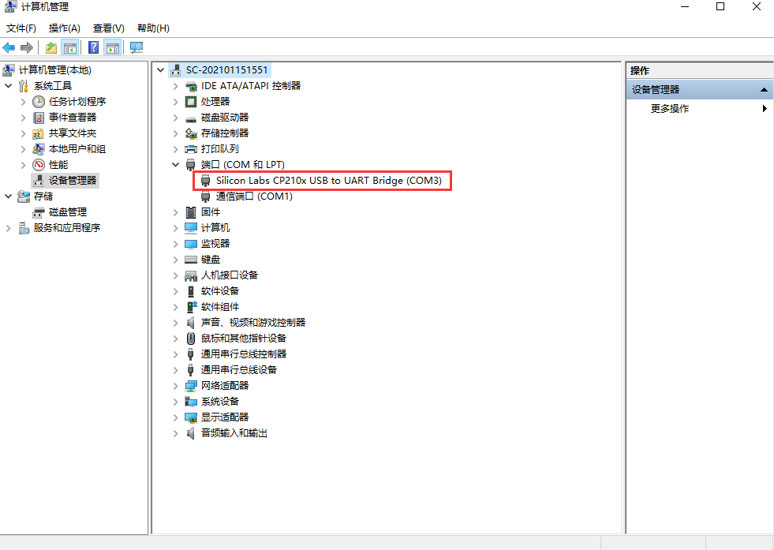
**步骤2：**打开putty并设置，serial line根据使用的电脑COM口设置，波特率115200
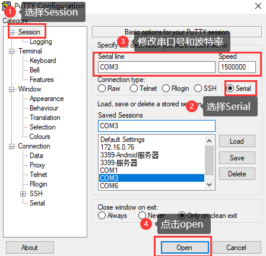
**步骤3：**上述设置完成后可以在Saved Sessions输入电脑使用的COM口，下图以COM3为例，将设置保存，之后再打开串口时，直接点击保存的端口号即可。
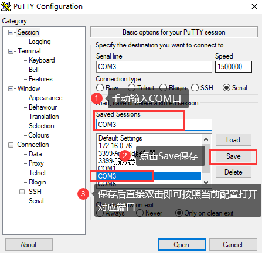
**步骤4：**打开开发板的电源开关，串口会有打印信息输出，用户名forlinx，密码forlinx（无root权限），如果需要使用root登录则用户名和密码分别为root，root。
input-event-daemon: Adding device: /dev/input/event9...
input-event-daemon: Start listening on 12 devices...
done
root@rk3576-buildroot:/# [ 37.424104] vbus5v0_typec0: disabling
[ 37.424151] vbus5v0_typec1: disabling
ok3576-buildroot login: forlinx
Password:
forlinx@ok3576-buildroot:~$
2.3.2 串口登录常见问题
电脑端口没有串口的可以通过USB转串口线与开发板连接，使用USB转串口线接需要安装对应的驱动程序。
建议使用质量好串口线以避免出现乱码情况。
2.4 系统关闭
一般情况下直接关闭电源即可，如果有数据存储、功能使用等操作，操作过程中不要随意断电，以防出现文件不可逆损坏，只能重新烧写固件。未确保数据完全写入，可输入 sync 命令完成数据同步后再关闭电源。
03_OK3576平台界面功能使用及测试
OK3576平台对Qt的支持非常完善，下面是演示桌面。
3.1 桌面功能测试
3.1.1 界面功能简介
开发板启动后桌面显示如下：

3.1.2 浏览器测试
“DemoBrowser”是一款简单实用的网络浏览器，在使用时请保证网络通畅，访问外网前需保证dns可用，浏览器启动时默认访问飞凌嵌入式官方网站。
应用图标
 注意：如果开发板的时间异常会导致证书问题。使用浏览器后不可以立即关闭电源或者在关闭电源前在命令行使用sync命令，否则可能导致浏览器异常退出，无法正常运行，只能重新烧录解决。
注意：如果开发板的时间异常会导致证书问题。使用浏览器后不可以立即关闭电源或者在关闭电源前在命令行使用sync命令，否则可能导致浏览器异常退出，无法正常运行，只能重新烧录解决。
界面如下：
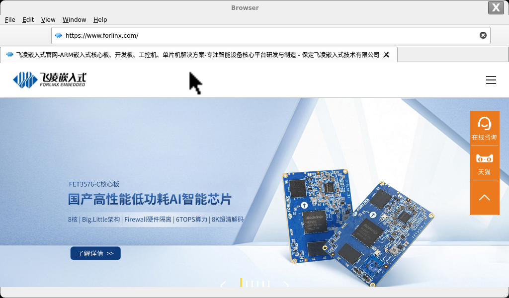
通过上方导航栏 File->Quit 退出该浏览器。
3.1.3 播放音乐测试
“musicplayer”是一款简单的音频测试应用，可用来测试声卡功能是否正常，也可用来作为一款简单的音频播放器。
应用图标
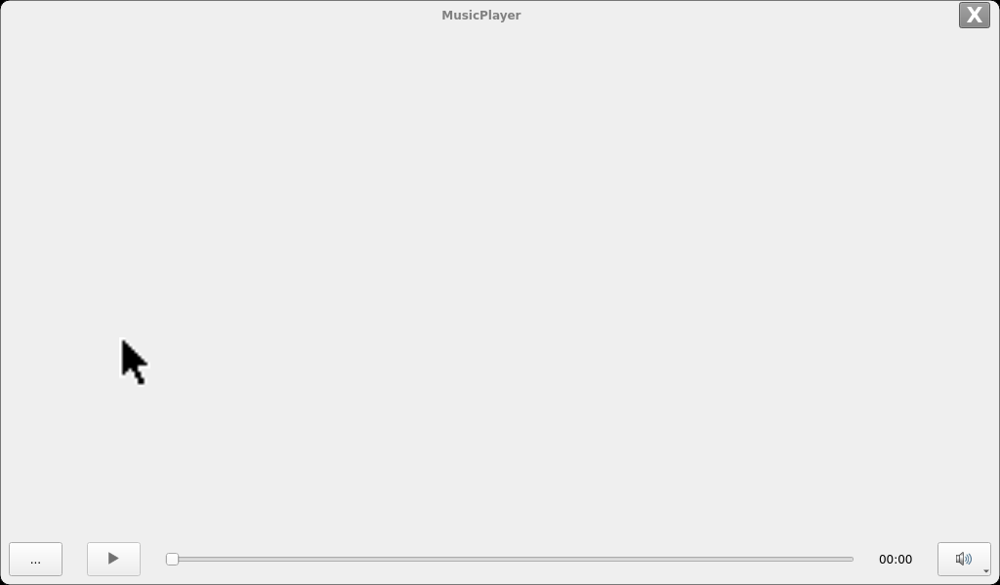
点击左下角的按钮，选择测试音频 /userdata/piano2-CoolEdit.mp3。
3.1.4 播放视频测试
点击桌面图标进入打开视频播放器qplayer。
应用图标
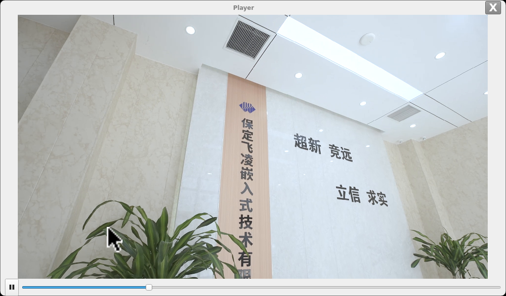
注意：测试视频文件所在目录：/media/forlinx/video/*.mp4
3.1.5 4G/5G 测试
 注意：此测试需要插入可上网的SIM卡，具体操作描述可以参考本手册的命令行功能测试5G章节。
注意：此测试需要插入可上网的SIM卡，具体操作描述可以参考本手册的命令行功能测试5G章节。
“4G/5G”测试程序用于测试OK3576外置5G模块(RM500U)。测试前请将开发板断电，接入5G模块，插入SIM卡，启动开发板打开测试应用。
同时该测试支持4G模组（EM05-CE），在断电情况下插入4G模组和SIM卡，上电系统启动后打开测试应用。

应用图标
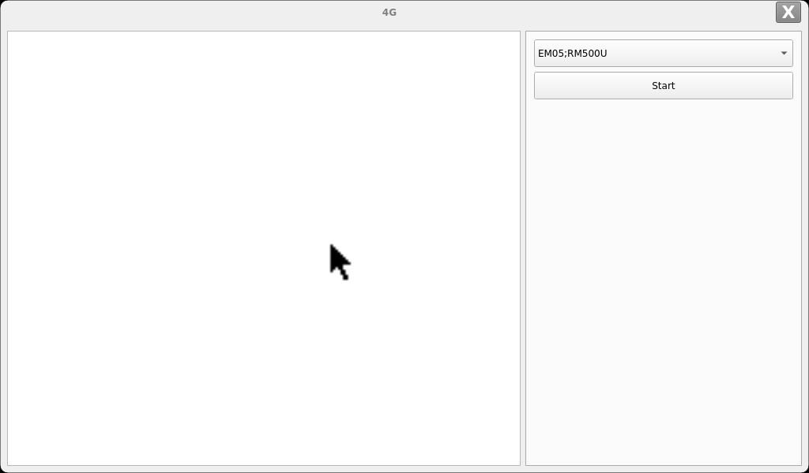
点击Start按钮，程序将自动进入拨号流程并获取IP设置DNS等，耐心等待几秒钟后，当屏幕输出IP地址后，退出当前应用。进入DemoBrowser网络浏览器进行测试，若打开应用能够正常访问飞凌嵌入式官方网站，说明此时已连接成功。
3.1.6 看门狗测试
“WatchDog”是用来测试看门狗功能是否正常的应用

应用图标
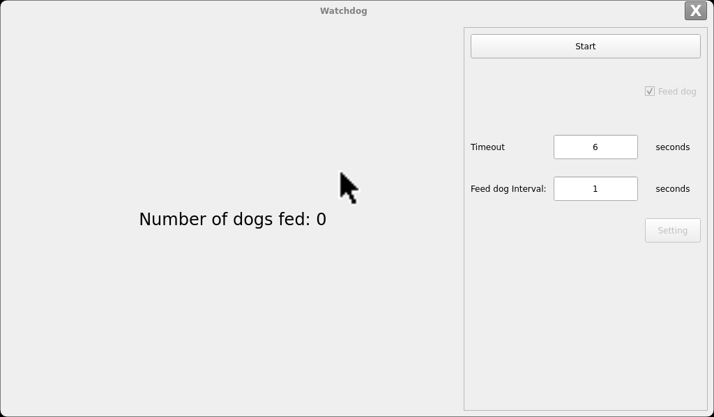
点击start，默认打开喂狗功能，定时喂狗，此时系统不会重启。取消勾选 feed dog时，倒计时10s，系统进入重启。说明看门狗功能正常。
3.1.7 串口测试
点击桌面图标可以使用它来测试OK3576板载UART接口。
应用图标
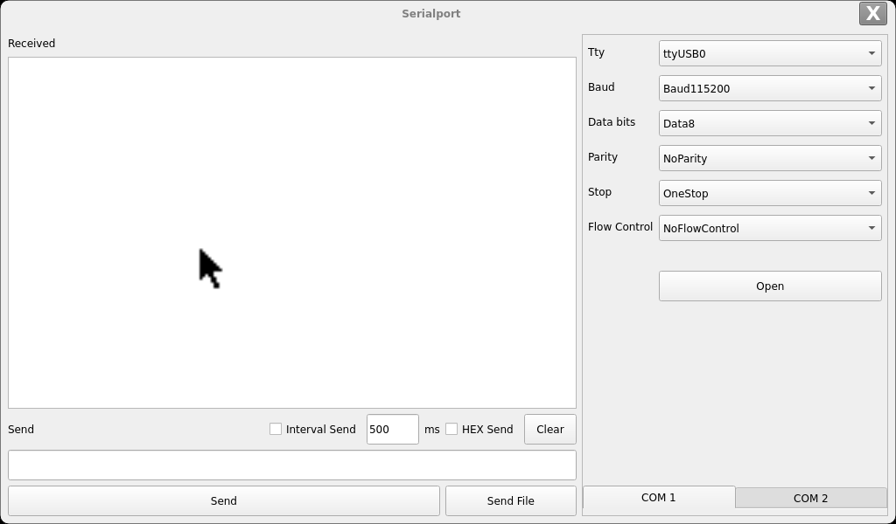
界面展示
OK3576平台底板原理图中标示引出的 UART0、UART4、UART5、UART6共4路串口，其中UART0为调试串口，UART4为蓝牙串口，UART5、UART6为485串口。
测试使用UART5、UART6两路RS485对测，测试前需要连接好两路RS485接口A、B引脚，A接A，B接B。两路RS485的底板接口如下：
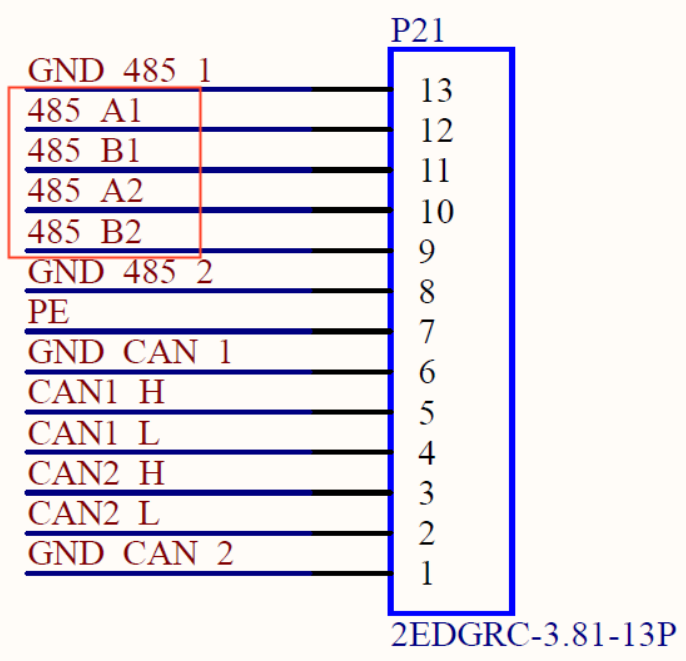
测试方法：
在界面中设置ttyS6，波特率9600，8位数据位，1位停止位。最后点击open按钮。
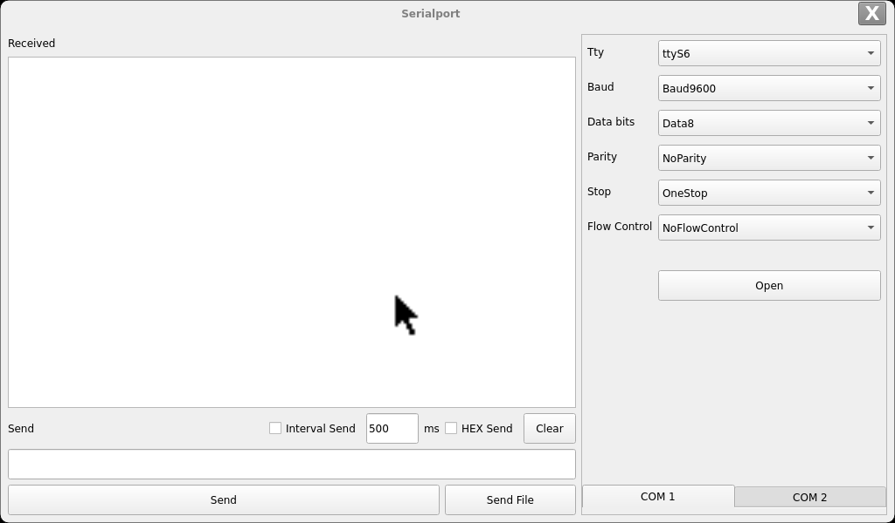
并且使用串口登录到开发板，在串口终端中输入echo “forlinx_uart_test.1234567890…” > /dev/ttyS5。测试界面会接收到数据：

在串口终端输出cat /dev/ttyS5，再页面中点击send下的输入框，使用键盘输入“abcdefg”，点击send。此时ttyS5可以收到消息。
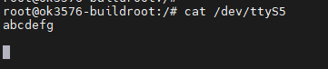
3.1.8 背光测试
“BackLight”是lcd背光调整应用：
应用图标
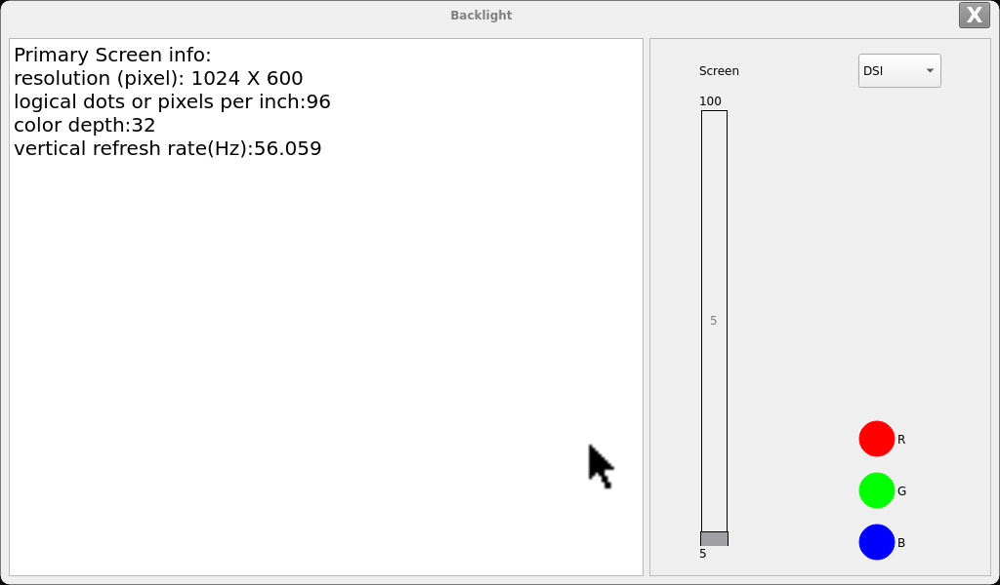
应用界面
拖动界面中的滑块即可设置lcd背光亮度。
3.1.9 按键测试
“Keypad”用于测试平台自带按键是否可用：
应用图标
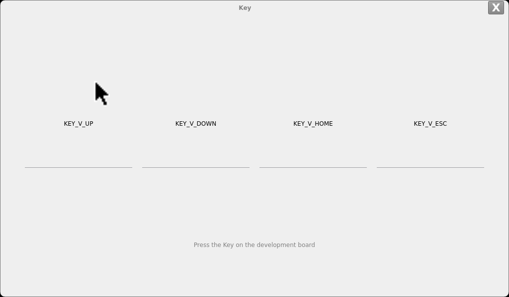
OK3576平台默认将4个物理按键 V+、V-、MENU、ESC 分别配置为音量+键、音量-键，Menu、返回键。当按下按键时测试应用中的对应按键会变为蓝色，说明按键功能正常。
3.1.10 RTC测试
通过“RTC”应用，可查看和设置当前的系统时间：
应用图标
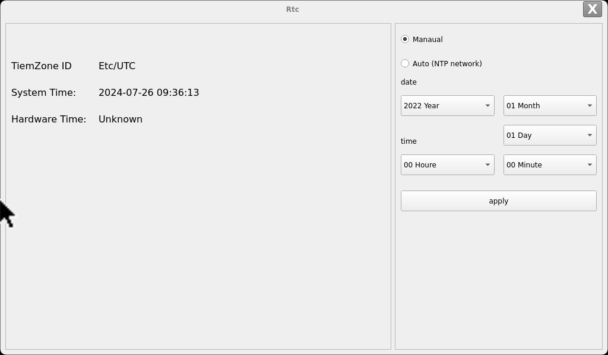
选择 Manual 之后，可手动设置时间，选择 date 和 time，点击 apply，设置完成，安装好 RTC 备用电池的情况下，时间断电重启不丢失。
点击 Auto，网络对时，点击 apply，对时成功。
3.1.11 网络配置测试
OK3568可通过“Network”网络配置应用来选择 dhcp 和 static 两种模式，static 模式可配置 ip 地址、子网掩码、网关、DNS。

应用图标
选中eth0或者eth1，再选中DHCP，点击界面下方“应用”，即可重启网络并自动获取到ip。
点击STATIC，选择设置静态IP，在ip栏中输入要设定的ip，netmask栏中输入子网掩码，geteway
栏中输入网关，dns栏中输入DNS。
输入网址，点击ping键后，左侧提示框中会提示ping的结果，如下：
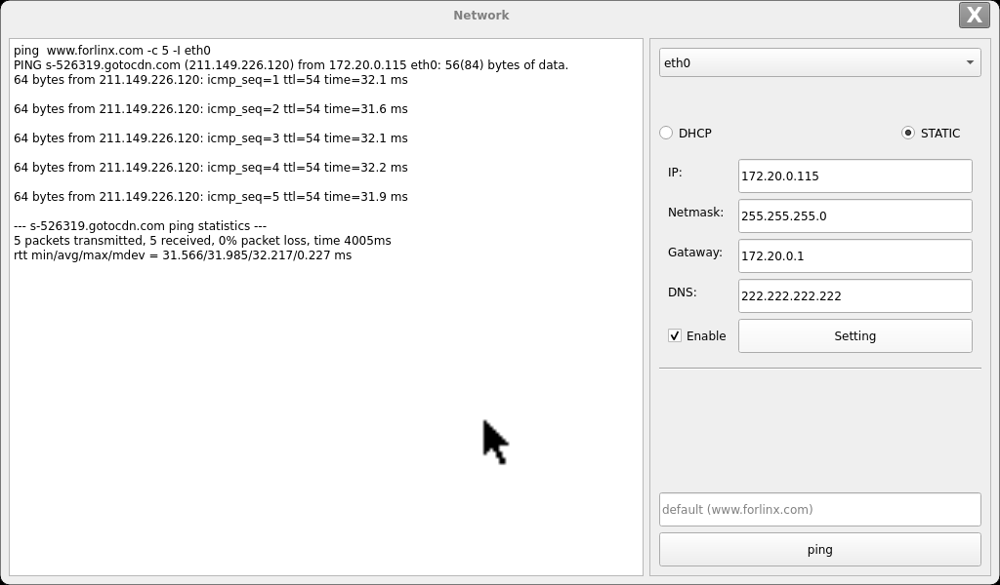
注：在STATIC模式下设置的ip等信息会被保存至系统的相关配置文件中，因此每次重启都会使用本次设置的网络信息；而在DHCP模式下配置的网络信息则不需注意这一点，每次重新启动都会动态分配一次ip地址。
3.1.12 数据库测试
点击桌面图标可以使用Sqlite测试数据库。
应用图标

3.1.13 系统信息测试
点击桌面图标可以显示系统相关信息。
应用图标

3.2 命令行功能测试
OK3576平台内置了丰富的命令行工具可供用户使用。
3.2.1 系统信息查询
查看内核和cpu信息，输入如下命令
root@ok3576-buildroot:/# uname -a
Linux ok3576-buildroot 6.1.75 #4 SMP Wed Jul 24 09:06:40 CST 2024 aarch64 GNU/Linux
查看操作系统信息：
root@ok3576-buildroot:/# cat /etc/issue
Welcome to RK3576 Buildroot
查看环境变量信息：
root@ok3576-buildroot:/# env
SHELL=/bin/sh
GST_V4L2_PREFERRED_FOURCC=NV12:YU12:NV16:YUY2
GST_VIDEO_CONVERT_PREFERRED_FORMAT=NV12:NV16:I420:YUY2
CHROMIUM_FLAGS=--enable-wayland-ime
GST_V4L2_USE_LIBV4L2=1
WESTON_DRM_MIN_BUFFERS=2
WL_OUTPUT_VERSION=3
GST_INSPECT_NO_COLORS=1
PULSE_HOME=/userdata/.pulse
EDITOR=/bin/vi
WESTON_DRM_KEEP_RATIO=1
GST_DEBUG_NO_COLOR=1
PWD=/
HOME=/
LANG=en_US.UTF-8
ADB_TCP_PORT=5555
WESTON_FREEZE_DISPLAY=/tmp/.freeze_weston
WAYLANDSINK_FORCE_DMABUF=1
GST_V4L2SRC_DEFAULT_DEVICE=/dev/video-camera0
QT_QPA_PLATFORM=wayland
USB_FW_VERSION=0x0310
TERM=vt102
USER=root
AUTOAUDIOSINK_PREFERRED=pulsesink
ADBD_SHELL=/bin/bash
GST_V4L2SRC_RK_DEVICES=_mainpath:_selfpath:_bypass:_scale
WESTON_DRM_MIRROR=1
SHLVL=1
USB_FUNCS=adb
WESTON_DISABLE_ATOMIC=1
USB_MANUFACTURER=Rockchip
USB_PRODUCT=rk3xxx
XDG_RUNTIME_DIR=/var/run
USB_VENDOR_ID=0x2207
PLAYBIN2_PREFERRED_AUDIOSINK=pulsesink
PATH=/usr/bin:/usr/sbin
storagemedia=emmc
GST_V4L2SRC_MAX_RESOLUTION=3840x2160
GST_VIDEO_DECODER_QOS=0
_=/usr/bin/env
3.2.2 调频测试
说明：四核A53分别是cpu0、cpu1、cpu2、cpu3; 四核A72分别是cpu5、cpu6、cpu7、cpu8。此过程以cpu0为例操作，实际过程cpu1、cpu2、cpu3会同时改变； 操作cpu4， cpu5、cpu6、cpu7也会同时改变。
当前内核中支持的所有cpufreq governor类型：
root@ok3576-buildroot:/# cat /sys/devices/system/cpu/cpu0/cpufreq/scaling_available_governors
interactive conservative ondemand userspace powersave performance schedutil
其中userspace表示用户模式，在此模式下允许其他用户程序调节CPU频率。
查看当前CPU支持的频率档位
root@ok3576-buildroot:/# cat /sys/devices/system/cpu/cpu0/cpufreq/scaling_available_frequencies
408000 600000 816000 1008000 1200000 1416000 1608000 1800000 2016000
设置为用户模式，修改频率为2016000：
查看修改前当前频率：
root@ok3576-buildroot:/# cat /sys/devices/system/cpu/cpu0/cpufreq/cpuinfo_cur_freq
1416000
修改频率：
root@ok3576-buildroot:/# echo userspace > /sys/devices/system/cpu/cpu0/cpufreq/scaling_governor
root@ok3576-buildroot:/# echo 2016000> /sys/devices/system/cpu/cpu0/cpufreq/scaling_setspeed
查看修改后当前频率：
root@ok3576-buildroot:/# cat /sys/devices/system/cpu/cpu0/cpufreq/cpuinfo_cur_freq
2016000
3.2.3 温度测试
查看温度值：
root@ok3576-buildroot:/# cat /sys/class/thermal/thermal_zone0/temp
45307
温度值即为45.3℃。
3.2.4 DDR测试
使用memtester做内存压力测试。
root@ok3576-buildroot:/# memtester 100M 1
memtester version 4.5.1_20231020 (32-bit)
Copyright (C) 2001-2020 Charles Cazabon.
Licensed under the GNU General Public License version 2 (only).
pagesize is 4096
pagesizemask is 0xfffffffffffff000
want 100MB (104857600 bytes)
got 100MB (104857600 bytes), trying mlock ...locked.
testing from phyaddress:0x4fc3c000
get chip name: (null)
get ddr bw: (null)
io bw x32
Loop 1/1:
Stuck Address : ok
Random Value : ok
Compare XOR : ok
Compare SUB : ok
Compare MUL : ok
Compare DIV : ok
Compare OR : ok
Compare AND : ok
Sequential Increment: ok
Solid Bits : ok
Block Sequential : ok
Checkerboard : ok
Bit Spread : ok
Bit Flip : ok
Walking Ones : ok
Walking Zeroes : ok
8-bit Writes : ok
16-bit Writes : ok
*************************************************************
memtester result:
Log: had found 0 failures.
Status: PASS.
*************************************************************
3.2.5 看门狗测试
看门狗是嵌入式系统中经常用到的功能，OK3576中看门狗的设备节点为/dev/watchdog 。本测试提供了两种测试程序，用户根据实际情况选择一种测试。
启动看门狗，设置复位时间10s，并定时喂狗
使用fltest_watchdog，此命令会打开看门狗并执行喂狗操作，因此系统不会重启
root@ok3576-buildroot:/# fltest_watchdog
Watchdog Ticking Away!
使用ctrl+c结束测试程序时，停止喂狗，看门狗处于打开状态，10s后系统复位;
若不想复位，请在结束程序之后10s内输入关闭看门狗命令：
root@ok3576-buildroot:/# fltest_watchdog -d //Turn off the watchdog
启动看门狗，设置复位时间10s，不喂狗
执行命令fltest_watchdogrestart, 此命令会打开看门狗，但不执行喂狗操作，系统会在10s后重启。
root@ok3576-buildroot:/# fltest_watchdogrestart
3.2.6 RTC功能测试
注意：确保板子上已经安装了纽扣电池，并且电池电压正常
RTC 测试，主要通过使用 date 和 hwclock 工具设置软、硬件时间，测试当板子断电再上电的时候，软件时钟读取 RTC 时钟是否同步
时间设置
root@ok3576-buildroot:/# date -s "2022-12-12 17:23:00" //Set software time
Mon Dec 12 17:23:00 UTC 2022
root@ok3576-buildroot:/# hwclock -wu //Synchronize software time to hardware time
root@ok3576-buildroot:/# hwclock -r //Display the hardware time
Mon Dec 12 17:23:26 2022 0.000000 seconds
然后给板子断电再上电，进入系统后读取系统时间，可以看到时间已经同步。
root@rk3576-buildroot:/# date
Mon Dec 12 17:23:50 UTC 2022
3.2.7 按键测试
使用fltest_keytest命令行工具进行按键测试，目前fltest_keytest支持底板上4个按键VOL+、VOL-、MENU、ESC的测试，键码分别为115、114、139、158
执行如下命令：
root@ok3576-buildroot:/# fltest_keytest
此时依次按下抬起按键，终端上可输出如下内容：
key115 Presse // VOL+presse
key115 Released // VOL+release
key114 Presse // VOL-presse
key114 Released // VOL-release
key139 Presse // MENU presse
key139 Released // MENU release
key158 Presse // ESC presse
key158 Released // ESC release
3.2.8 以太网配置
OK3576-C板载两个千兆网卡，插入网线连接网络的情况下，eth0默认配置了静态IP，eth1默认使用动态分配IP策略。
查看eth0、eth1配置文件， 配置文件的路径为：/etc/network/interfaces.d/eth0，设置静态ip的配置内容为：
auto eth0
iface eth0 inet static
address 192.168.0.232
netmask 255.255.255.0
gateway 192.168.0.1
eth1配置文件的路径为：/etc/network/interfaces.d/eth1，动态分配配置内容为：
auto eth1
iface eth1 inet dhcp
参数 |
含义 |
|---|---|
iface |
用于指定需要固定IP的网卡 |
address |
用于指定需要固定的IP地址 |
netmask |
用于设置子网掩码 |
gateway |
用于指定网关 |
可以手动修改网卡配置，设置完后使用sync文件同步指令，重启开发板或者重启服务，配置生效。
root@ok3576-buildroot:/# ifdown -a
root@ok3576-buildroot:/# ifup -a
打流测试
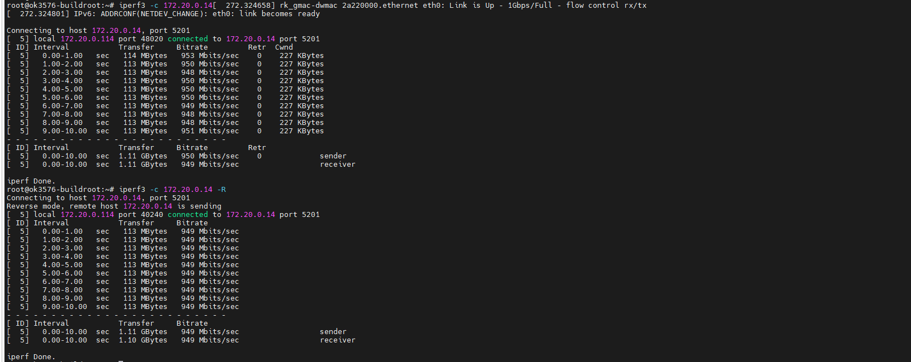
3.2.9 UART 485测试
OK3576平台底板原理图中标示引出的UART0、UART4、UART5、UART6共4路串口，其中UART0为调试串口，UART4为蓝牙串口，UART5、UART6为485串口。
UART |
设备节点 |
说明 |
|---|---|---|
UART0 |
调试串口，不能直接用于测试: |
|
UART4 |
/dev/ttyS4 |
用于蓝牙，未单独引出，不能直接用于该测试 |
UART5 |
/dev/ttyS5 |
RS485 |
UART6 |
/dev/ttyS6 |
RS485 |
测试使用UART5、UART6两路RS485对测，测试前需要连接好两路RS485接口A、B引脚，A接A，B接B。两路RS485的底板接口如下：

使用两路终端登录开发板，一路UART0 debug调试口，另一路使用SSH登录。
debug终端
root@ok3576-buildroot:/# echo 123456 > /dev/ttyS5 //发送数据
root@ok3576-buildroot:/# cat /dev/ttyS5 //接收数据，当ttyS6发送数据的时候就可以接收到
111111
SSH终端
root@ok3576-buildroot:~# cat /dev/ttyS6 //接收数据，当ttyS5发送数据的时候就可以接收到
123456
root@ok3576-buildroot:~# echo 111111 > /dev/ttyS6 //发送数据
3.2.10 ADC测试
OK3576-C开发板内部提供了8路ADC，在P18端口留出saradc2、 saradc4、saradc5、saradc6、saradc7通道，可以使用跳线帽连接旁边的可调电阻进行测试。ADC引脚硬件图如下，当前芯片使用1.8V参考电压对应 12 位ADC最大值4096。选择 saradc4进行测试，使用跳线帽连接P18端口的3、4引脚。
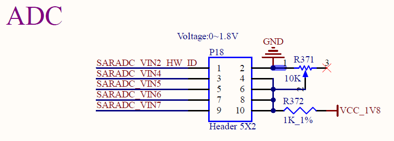
测试可调电阻数值
root@ok3576-buildroot:/# cd /sys/bus/iio/devices/iio:device0
root@ok3576-buildroot:/sys/bus/iio/devices/iio:device0# cat in_voltage4_raw
1095
3.2.11 TF卡测试
说明：
TF卡挂载目录为/mnt/sdcard/，支持热插拔。
1、上电前将TF卡插入开发板底板的TF卡插槽，上电启动，运行命令dmesg，终端有如下打印信息：

2、查看挂载目录：
root@ok3576-buildroot:/# mount | grep "mmcblk1p1"
/dev/mmcblk1p1 on /mnt/sdcard type vfat (rw,nodev,noexec,noatime,nodiratime,fmask=0022,dmask=0022,codepage=936,iocharset=utf8,shortname=mixed,errors=remount-ro)
3、写入测试：
root@ok3576-buildroot:/# dd if=/dev/zero of=/mnt/sdcard/test bs=1M count=100 conv=fsync
100+0 records in
100+0 records out
104857600 bytes (105 MB, 100 MiB) copied, 4.4581 s, 23.5 MB/s
4、读取测试：
**注意：**为确保数据准确，请重启开发板后测试读取速度。
root@ok3576-buildroot:/# dd if=/mnt/sdcard/test of=/dev/null bs=1M
100+0 records in
100+0 records out
104857600 bytes (105 MB, 100 MiB) copied, 1.17886 s, 88.9 MB/s
5、TF卡使用完成后，在弹出TF卡前，需要使用umount卸载TF
root@ok3576-buildroot:/# umount /mnt/sdcard/test
注意：退出TF卡挂载路径后再插拔TF卡。
3.2.12 eMMC 测试
OK3576平台eMMC默认运行于HS400模式200MHz时钟，下面简单测试eMMC的读写速度，以读写ext4文件系统为例。
写入测试：
root@ok3576-buildroot:/# dd if=/dev/zero of=/test bs=1M count=500 conv=fsync
500+0 records in
500+0 records out
524288000 bytes (524 MB, 500 MiB) copied, 2.81396 s, 186 MB/s
读取测试：
**注意：**为确保数据准确，请重启开发板后测试读取速度。
root@ok3576-buildroot:/# dd if=/test of=/dev/null bs=1M
500+0 records in
500+0 records out
524288000 bytes (524 MB, 500 MiB) copied, 1.99774 s, 262 MB/s
3.2.13 USB鼠标测试
将USB鼠标接入OK3576平台的usb接口，使用dmesg命令， 串口终端的打印信息如下：

此时在屏幕上出现箭头光标，鼠标已可正常使用。
3.2.14 USB3.0
OK3576底板使用USB3.0集线器分出3路USB3.0 host，可以连接USB鼠标、 USB键盘、U盘等设备， 并支持以上设备的热插拔。 这里用挂载U盘为例进行演示， 目前U盘测试支持到32G， 32G以上并未测试。
终端会打印关于U盘的信息，由于存在很多种U盘，显示的信息可能会有差别：
开发板启动后，连接USB接口u盘到开发板的USB host接口，默认log打印信息较低，不会有打印信息。可以使用dmesg命令查看，找到u盘相关信息

查看挂载目录：
root@ok3576-buildroot:/# mount | grep "sda1"
/dev/sda1 on /mnt/udisk type fuseblk (rw,nodev,noexec,noatime,user_id=0,group_id=0,allow_other,blksize=4096)
可以看到/mnt/udisk为USB存储设备的挂载路径
3、写入测试，写入速度受限于具体的存储设备：
root@ok3576-buildroot:/# dd if=/dev/zero of=/mnt/udisk/test bs=1M count=500 conv=fsync
500+0 records in
500+0 records out
524288000 bytes (524 MB, 500 MiB) copied, 12.5819 s, 41.7 MB/s
4、读取测试：
**注意：**为确保数据准确，请重启开发板后测试读取速度。
root@ok3576-buildroot:/# dd if=/mnt/udisk/test of=/dev/null bs=1M
500+0 records in
500+0 records out
524288000 bytes (524 MB, 500 MiB) copied, 3.66646 s, 143 MB/s
5、U盘使用完成后，在拔出U盘前，需要使用umount卸载
root@ok3576-buildroot:/# umount /mnt/udisk
注意：退出U盘挂载路径后再插拔U盘。
3.2.15 TYPE-C 测试
OK3576-C包含1个TYPE-C接口，TYPE-C HOST/DEVICE模式自动识别。Device模式可以用它来进行刷机，ADB文件传输、调试，Host模式使用TYPE-C转Host线可以插入普通的USB 设备。
Device 模式：
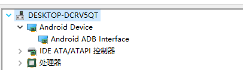
Host模式：
接入U盘查看插入信息。
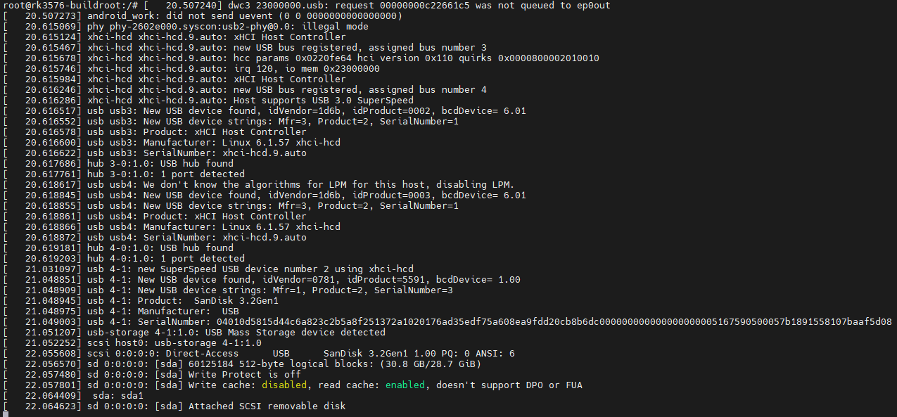
3.2.16 WIFI 测试
说明：
由于网络环境的不同，所以在您做本实验时，请根据实际情况进行设置。
OK3576平台支持AW-CM358 WIFI蓝牙二合一模块。
STA 模式
该模式即作为一个站点，连接到无线网络中。以下测试中，路由器采用wpa加密方式，连接的wifi热点名称为：forlinx-wlan，密码为：fl03123102650。由于网络环境的不同，用户在进行本次测试时，请根据实际情况进行设置：
1、开发板终端中输入如下命令加载WiFi模块和固件：
root@ok3576-buildroot:/# insmod /lib/modules/mlan.ko
root@ok3576-buildroot:/# insmod /lib/modules/moal.ko cal_data_cfg=none fw_name=sdiouart8987_combo_v0.bin sta_name=wlan cfg80211_wext=12
[ 57.995938] wlan: Loading MWLAN driver
[ 57.996950] wlan: Register to Bus Driver...
[ 57.997104] vendor=0x02DF device=0x9149 class=0 function=1
[ 57.997220] Attach moal handle ops, card interface type: 0x105
[ 57.997235] rps set to 0 from module param
[ 57.997244] No module param cfg file specified
[ 57.997257] SDIO: max_segs=256 max_seg_size=4096
[ 57.997266] rx_work=1 cpu_num=8
[ 57.997274] Enable moal_recv_amsdu_packet
[ 57.997301] Attach mlan adapter operations.card_type is 0x105.
[ 57.997643] wlan: Enable TX SG mode
[ 57.997653] wlan: Enable RX SG mode
[ 58.000538] Request firmware: nxp/sdiouart8987_combo_v0.bin
[ 58.000584] wlan_interrupt: sdio_ireg = 0x0
[ 58.281642] Wlan: FW download over, firmwarelen=617588 downloaded 617588
[ 59.147285] WLAN FW is active
[ 59.147333] on_time is 57886880791
[ 59.213321] FW country code WW does not match with US
[ 59.213649] fw_cap_info=0x181d7f03, dev_cap_mask=0xffffffff
[ 59.213697] max_p2p_conn = 8, max_sta_conn = 8
[ 59.226703] Register NXP 802.11 Adapter wlan0
[ 59.227892] Register NXP 802.11 Adapter uap0
[ 59.230135] Register NXP 802.11 Adapter wfd0
[ 59.230185] wlan: version = SD8987----16.92.21.p99.2-MM6X16423.p6-GPL-(FP92)
[ 59.231697] wlan: Register to Bus Driver Done
[ 59.231728] wlan: Driver loaded successfully
2、使用wpa_supplicant配置WiFi SSID和密码，udhcpc自动分配IP：
root@ok3576-buildroot:/# wpa_supplicant -i wlan0 -c /etc/wpa_supplicant.conf &
[1] 1258
root@rk3576-buildroot:/# Successfully initialized wpa_supplicant
[ 726.047748] wlan: wlan0 START SCAN
[ 730.345408] wlan: SCAN COMPLETED: scanned AP count=4
wlan0: SME: Trying to authenticate with 9e:2b:a6:85:b4:cd (SSID='forlinx-wlan' freq=5765 MHz)
[ 730.351236] wlan: HostMlme wlan0 send auth to bssid 9e:XX:XX:XX:b4:cd
wlan0: CTRL-EVENT-REGDOM-CHANGE init=BEACON_HINT type=UNKNOWN
wlan0: CTRL-EVENT-REGDOM-CHANGE init=BEACON_HINT type=UNKNOWN
BSSID 9e:2b:a6:85:b4:cd ignore list count incremented to 2, ignoring for 10 seconds
[ 732.855960] wlan: wlan0 START SCAN
[ 732.972103] wlan: SCAN COMPLETED: scanned AP count=4
wlan0: SME: Trying to authenticate with 9e:2b:a6:82:15:1d (SSID='forlinx-wlan' freq=5220 MHz)
[ 732.977432] wlan: HostMlme wlan0 send auth to bssid 9e:XX:XX:XX:15:1d
[ 735.882467] wlan: wlan0 START SCAN
[ 740.870925] wlan: SCAN COMPLETED: scanned AP count=7
wlan0: SME: Trying to authenticate with 9e:2b:a6:82:2d:b9 (SSID='forlinx-wlan' freq=5200 MHz)
[ 740.877130] wlan: HostMlme wlan0 send auth to bssid 9e:XX:XX:XX:2d:b9
wlan0: CTRL-EVENT-REGDOM-CHANGE init=BEACON_HINT type=UNKNOWN
[ 741.290714] wlan0:
[ 741.290731] wlan: HostMlme Auth received from 9e:XX:XX:XX:2d:b9
wlan0: Trying to associate with 9e:2b:a6:82:2d:b9 (SSID='forlinx-wlan' freq=5200 MHz)
[ 741.295759] CMD_RESP: cmd 0x121 error, result=0x2
[ 741.295828] IOCTL failed: 00000000d51bac09 id=0x200000, sub_id=0x200024 action=2, status_code=0x3
[ 741.295913] Get multi-channel policy failed
[ 741.306833] wlan: HostMlme wlan0 Connected to bssid 9e:XX:XX:XX:2d:b9 successfully
wlan0: Associated with 9e:2b:a6:82:2d:b9
wlan0: CTRL-EVENT-SUBNET-STATUS-UPDATE status=0
[ 741.415016] wlan0:
[ 741.415041] wlan: Send EAPOL pkt to 9e:XX:XX:XX:2d:b9
[ 741.418061] wlan0:
[ 741.418074] wlan: Send EAPOL pkt to 9e:XX:XX:XX:2d:b9
wlan0: WPA: Key negotiation completed with 9e:2b:a6:82:2d:b9 [PTK=CCMP GTK=CCMP]
[ 741.421651] IPv6: ADDRCONF(NETDEV_CHANGE): wlan0: link becomes ready
wlan0: CTRL-EVENT-CONNECTED - Connection to 9e:2b:a6:82:2d:b9 completed [id=0 id_str=]
[ 741.422676] woal_cfg80211_set_rekey_data return: gtk_rekey_offload is DISABLE
root@ok3576-buildroot:/# udhcpc -i wlan0
udhcpc: started, v1.36.0
udhcpc: broadcasting discover
udhcpc: broadcasting select for 192.168.81.79, server 192.168.80.1
udhcpc: lease of 192.168.81.79 obtained from 192.168.80.1, lease time 28800
deleting routers
adding dns 222.222.202.202
adding dns 222.222.222.222
ping外网测试网络连通性：
root@ok3576-buildroot:/# ping www.forlinx.com -c 3
PING s-526319.gotocdn.com (211.149.226.120) 56(84) bytes of data.
64 bytes from 211.149.226.120 (211.149.226.120): icmp_seq=1 ttl=54 time=142 ms
64 bytes from 211.149.226.120 (211.149.226.120): icmp_seq=2 ttl=54 time=33.6 ms
64 bytes from 211.149.226.120 (211.149.226.120): icmp_seq=3 ttl=54 time=88.9 ms
— s-526319.gotocdn.com ping statistics —
3 packets transmitted, 3 received, 0% packet loss, time 2002ms
rtt min/avg/max/mdev = 33.612/88.201/142.135/44.306 ms
3.2.17 蓝牙测试
OK3576开发板中底板AW-CM358模块，集成了蓝牙功能，本节演示使用手机与开发板之间通过蓝牙进行数据传输，支持蓝牙5.0。 注意在测试蓝牙之前需要线按照前一节“WiFi测试”将WiFi模块和固件加载完成
1、启动蓝牙
root@ok3576-buildroot:/# hciattach /dev/ttyS4 any 115200 flow
[ 4158.312431] of_dma_request_slave_channel: dma-names property of node '/serial@2ad70000' missing or empty
[ 4158.312482] dw-apb-uart 2ad70000.serial: failed to request DMA, use interrupt mode
Device setup complete
root@ok3576-buildroot:/# [ 4158.465349] Bluetooth: MGMT ver 1.22
N: [pulseaudio] bluez5-util.c: Could not find org.bluez.BatteryProviderManager1.RegisterBatteryProvider(), is bluetoothd started with experimental features enabled (-E flag)?
root@ok3576-buildroot:/# hciconfig hci0 up
2、蓝牙配置
root@ok3576-buildroot:/# bluetoothctl //打开bluez蓝牙工具
[NEW] Controller B8:4D:43:12:43:6F forlinx [default]
Agent registered
[bluetooth]# power on //启动蓝牙设备
Changing power on succeeded
[bluetooth]# pairable on //设置为配对模式
Changing pairable on succeeded
[bluetooth]# discoverable on //设置为可发现模式
[bluetooth]# [ 1547.589820] Bluetooth: hu ffffffc066059c00 retransmitting 1 pkts
Changing discoverable on succeeded
[CHG] Controller B8:4D:43:12:43:6F Discoverable: yes
[bluetooth]# agent on //启动代理
Agent is already registered
[bluetooth]# default-agent //设置当前代理为默认
Default agent request successful
[bluetooth]# scan on //打开扫描，扫描要连接的设备
[CHG] Device 6C:2A:10:D8:4F:18 RSSI: 0xffffffb1 (-79)
[DEL] Device 25:B1:38:2B:50:3D 25-B1-38-2B-50-3D
[NEW] Device 25:B1:38:2B:50:3D 25-B1-38-2B-50-3D
[CHG] Device 6C:2A:10:D8:4F:18 RSSI: 0xffffffba (-70)
[CHG] Device 6C:2A:10:D8:4F:18 RSSI: 0xffffffae (-82)
[NEW] Device 3C:13:5A:A1:C8:B5 Redmi K60
[bluetooth]# pair 3C:13:5A:A1:C8:B5 //配对要连接的设备mac
Attempting to pair with 3C:13:5A:A1:C8:B5
[CHG] Device 3C:13:5A:A1:C8:B5 Connected: yes
Request confirmation
[agent] Confirm passkey 628193 (yes/no): yes
[CHG] Device 3C:13:5A:A1:C8:B5 Bonded: yes
[CHG] Device 3C:13:5A:A1:C8:B5 Modalias: bluetooth:v038Fp1200d1436
[CHG] Device 3C:13:5A:A1:C8:B5 UUIDs: 00001105-0000-1000-8000-00805f9b34fb
[CHG] Device 3C:13:5A:A1:C8:B5 UUIDs: 0000110a-0000-1000-8000-00805f9b34fb
[CHG] Device 3C:13:5A:A1:C8:B5 UUIDs: 0000110c-0000-1000-8000-00805f9b34fb
[CHG] Device 3C:13:5A:A1:C8:B5 UUIDs: 00001112-0000-1000-8000-00805f9b34fb
[CHG] Device 3C:13:5A:A1:C8:B5 UUIDs: 00001115-0000-1000-8000-00805f9b34fb
[CHG] Device 3C:13:5A:A1:C8:B5 UUIDs: 00001116-0000-1000-8000-00805f9b34fb
[CHG] Device 3C:13:5A:A1:C8:B5 UUIDs: 0000111f-0000-1000-8000-00805f9b34fb
[CHG] Device 3C:13:5A:A1:C8:B5 UUIDs: 0000112f-0000-1000-8000-00805f9b34fb
[CHG] Device 3C:13:5A:A1:C8:B5 UUIDs: 00001132-0000-1000-8000-00805f9b34fb
[CHG] Device 3C:13:5A:A1:C8:B5 UUIDs: 00001200-0000-1000-8000-00805f9b34fb
[CHG] Device 3C:13:5A:A1:C8:B5 UUIDs: 00001800-0000-1000-8000-00805f9b34fb
[CHG] Device 3C:13:5A:A1:C8:B5 UUIDs: 00001801-0000-1000-8000-00805f9b34fb
[CHG] Device 3C:13:5A:A1:C8:B5 UUIDs: 0000fcc0-0000-1000-8000-00805f9b34fb
[CHG] Device 3C:13:5A:A1:C8:B5 UUIDs: 0000fcc0-36a2-11ea-8467-484d7e99a198
[CHG] Device 3C:13:5A:A1:C8:B5 UUIDs: 0000fdaa-0000-1000-8000-00805f9b34fb
[CHG] Device 3C:13:5A:A1:C8:B5 UUIDs: 98b97136-36a2-11ea-8467-484d7e99a198
[CHG] Device 3C:13:5A:A1:C8:B5 UUIDs: ada499be-27d6-11ec-9427-0a80ff2603de
[CHG] Device 3C:13:5A:A1:C8:B5 ServicesResolved: yes
[CHG] Device 3C:13:5A:A1:C8:B5 Paired: yes //输入yes
Pairing successful
[bluetooth]# scan off //关闭扫描
Discovery stopped
[CHG] Device 35:A5:1D:93:B8:E9 RSSI is nil
[DEL] Device 35:A5:1D:93:B8:E9 35-A5-1D-93-B8-E9
[CHG] Device 35:06:37:F3:97:9D RSSI is nil
[DEL] Device 35:06:37:F3:97:9D 35-06-37-F3-97-9D
[CHG] Controller 20:0B:74:35:2F:5A Discovering: no
[bluetooth]# connect 3C:13:5A:A1:C8:B5 //连接要连接的设备的mac
Attempting to connect to 3C:13:5A:A1:C8:B5
[CHG] Device 3C:13:5A:A1:C8:B5 Connected: yes
[NEW] Endpoint /org/bluez/hci0/dev_3C_13_5A_A1_C8_B5/sep1
[NEW] Transport /org/bluez/hci0/dev_3C_13_5A_A1_C8_B5/sep1/fd0
Connection successful
[DEL] Device 63:35:1D:74:AA:A1 63-35-1D-74-AA-A1
[Redmi K60]# [ 4619.269366] input: Redmi K60 (AVRCP) as /devices/virtual/input/input11
[NEW] Player /org/bluez/hci0/dev_3C_13_5A_A1_C8_B5/player0 [default]
[Redmi K60]# [01:16:58.016] event11 - Redmi K60 (AVRCP): is tagged by udev as: Keyboard
[01:16:58.016] event11 - Redmi K60 (AVRCP): device is a keyboard
[01:16:58.017] libinput: configuring device "Redmi K60 (AVRCP)".
[01:16:58.017] associating input device event11 with output DSI-1 (none by udev)
[CHG] Device 3C:13:5A:A1:C8:B5 ServicesResolved: yes
[CHG] Player /org/bluez/hci0/dev_3C_13_5A_A1_C8_B5/player0 Repeat: off
[CHG] Player /org/bluez/hci0/dev_3C_13_5A_A1_C8_B5/player0 Shuffle: off
[CHG] Player /org/bluez/hci0/dev_3C_13_5A_A1_C8_B5/player0 Type: Audio
[CHG] Player /org/bluez/hci0/dev_3C_13_5A_A1_C8_B5/player0 Subtype: Audio Book
[CHG] Player /org/bluez/hci0/dev_3C_13_5A_A1_C8_B5/player0 Status: stopped
[CHG] Player /org/bluez/hci0/dev_3C_13_5A_A1_C8_B5/player0 Name: Music Player
[CHG] Transport /org/bluez/hci0/dev_3C_13_5A_A1_C8_B5/sep1/fd0 Volume: 0x0055 (85)
[CHG] Player /org/bluez/hci0/dev_3C_13_5A_A1_C8_B5/player0 Status: paused
[CHG] Player /org/bluez/hci0/dev_3C_13_5A_A1_C8_B5/player0 Track Key: Title
[CHG] Player /org/bluez/hci0/dev_3C_13_5A_A1_C8_B5/player0 Track Value: unknow
[CHG] Player /org/bluez/hci0/dev_3C_13_5A_A1_C8_B5/player0 Track Key: TrackNumber
[CHG] Player /org/bluez/hci0/dev_3C_13_5A_A1_C8_B5/player0 Track Value: 0x00000000 (0)
[CHG] Player /org/bluez/hci0/dev_3C_13_5A_A1_C8_B5/player0 Track Key: NumberOfTracks
[CHG] Player /org/bluez/hci0/dev_3C_13_5A_A1_C8_B5/player0 Track Value: 0x00000000 (0)
[CHG] Player /org/bluez/hci0/dev_3C_13_5A_A1_C8_B5/player0 Track Key: Duration
[CHG] Player /org/bluez/hci0/dev_3C_13_5A_A1_C8_B5/player0 Track Value: 0x00000000 (0)
[CHG] Player /org/bluez/hci0/dev_3C_13_5A_A1_C8_B5/player0 Track Key: Album
[CHG] Player /org/bluez/hci0/dev_3C_13_5A_A1_C8_B5/player0 Track Value: unknow
[CHG] Player /org/bluez/hci0/dev_3C_13_5A_A1_C8_B5/player0 Track Key: Artist
[CHG] Player /org/bluez/hci0/dev_3C_13_5A_A1_C8_B5/player0 Track Value: unknow
[CHG] Player /org/bluez/hci0/dev_3C_13_5A_A1_C8_B5/player0 Track Key: Genre
[CHG] Player /org/bluez/hci0/dev_3C_13_5A_A1_C8_B5/player0 Track Value:
[CHG] Player /org/bluez/hci0/dev_3C_13_5A_A1_C8_B5/player0 Position: 0x00000000 (0)
[DEL] Device 44:03:8E:A3:79:07 44-03-8E-A3-79-07
[CHG] Transport /org/bluez/hci0/dev_3C_13_5A_A1_C8_B5/sep1/fd0 Volume: 0x007f (127)
[Redmi K60]# W: [pulseaudio] module-loopback.c: Configured latency of 200.00 ms is smaller than minimum latency, using minimum instead
W: [pulseaudio] module-loopback.c: Cannot set requested sink latency of 35.20 ms, adjusting to 39.91 ms
W: [pulseaudio] module-loopback.c: Cannot set requested source latency of 66.67 ms, adjusting to 250.00 ms
[CHG] Transport /org/bluez/hci0/dev_3C_13_5A_A1_C8_B5/sep1/fd0 Volume: 0x0055 (85)
[DEL] Device D1:B1:46:9D:F9:C6 Mi Smart Band 4
[DEL] Device 64:F7:FF:12:32:2A 64-F7-FF-12-32-2A
[DEL] Device 7E:84:48:D0:B8:CA 7E-84-48-D0-B8-CA
[DEL] Device 6D:8B:09:A7:89:8F 6D-8B-09-A7-89-8F
[DEL] Device 46:CB:AA:35:D6:01 46-CB-AA-35-D6-01
[DEL] Device 5E:FB:3A:DF:A7:BC 5E-FB-3A-DF-A7-BC
[DEL] Device 66:56:59:68:0F:06 66-56-59-68-0F-06
[DEL] Device BE:F4:D4:08:7E:D6 BE-F4-D4-08-7E-D6
[DEL] Device 47:70:48:8E:72:9E 47-70-48-8E-72-9E
[DEL] Device 76:1F:77:CF:A9:E9 76-1F-77-CF-A9-E9
[DEL] Device 76:36:16:6E:CF:B6 76-36-16-6E-CF-B6
[DEL] Device 6C:2A:10:D8:4F:18 6C-2A-10-D8-4F-18
[CHG] Transport /org/bluez/hci0/dev_3C_13_5A_A1_C8_B5/sep1/fd0 Volume: 0x007f (127)
Authorize service
[agent] Authorize service 00001108-0000-1000-8000-00805f9b34fb (yes/no): [DEL] Device D4:BB:E6:8E:BB:B0 mywifi
[agent] Authorize service 00001108-0000-1000-8000-00805f9b34fb (yes/no): [DEL] Device 4C:50:77:0F:3B:2C huawei111
[agent] Authorize service 00001108-0000-1000-8000-00805f9b34fb (yes/no): [DEL] Device 24:DA:33:C9:10:86 CON
[agent] Authorize service 00001108-0000-1000-8000-00805f9b34fb (yes/no): yes //输入yes
开发板蓝牙连接到手机端显示为蓝牙耳机。
3.2.18 4G/5G
说明：
使用物联网卡测试时，需确认模组固件版本，低版本固件不支持，需升级EC05固件
有些物联网卡拨号时需要设置专用账号和密码，用户需根据实际情况调整指令
可使用quectelCM –help指令查看相关参数含义
4G/5G 需要使用底板S2开关做切换
OK3576支持4G模块EM05和5G RM500U，开发板启动前接入4G/5G模块 ，并插入SIM卡，启动开发板。
1、连接好模块，开发板和模块上电后，可通过lsusb指令查看USB状态
root@ok3576-buildroot:/# lsusb
Bus 002 Device 002: ID 04b4:6500
Bus 001 Device 001: ID 1d6b:0002
Bus 001 Device 004: ID 0000:3825
Bus 001 Device 003: ID 09da:2268
Bus 001 Device 002: ID 04b4:6502
Bus 002 Device 003: ID 0781:5591
Bus 002 Device 001: ID 1d6b:0003
Bus 001 Device 005: ID 2c7c:0125 //EC05的VID和PID
/dev下查看设备节点状态
root@ok3576-buildroot:/# ls /dev/ttyUSB*
/dev/ttyUSB0 /dev/ttyUSB1 /dev/ttyUSB2 /dev/ttyUSB3
2、设备识别成功后，可进行拨号上网测试。fltest_quectel.sh会调用quectelCM，具体指令可查看/usr/bin/fltest_quectel.sh
root@ok3576-buildroot:/# quectelCM &
打印信息如下：
[04-23_05:32:27:029]Quectel_QConnectManager_Linux_V1.6.0.24
[04-23_05:32:27:030] Find /sys/bus/usb/devices/1-1.4 idVendor=0x2c7c idProduct=0x125, bus=0x001, dev=0x005
[04-23_05:32:27:030] Auto find qmichannel = /dev/cdc-wdm0
[04-23_05:32:27:030] Auto find usbnet_adapter = wwan0
[04-23_05:32:27:030] netcard driver = qmi_wwan, driver version = 6.1.57
[04-23_05:32:27:031] Modem works in QMI mode
[04-23_05:32:27:034] cdc_wdm_fd = 7
[04-23_05:32:27:115] Get clientWDS = 7
[04-23_05:32:27:147] Get clientDMS = 1
[04-23_05:32:27:179] Get clientNAS = 2
[04-23_05:32:27:210] Get clientUIM = 1
[04-23_05:32:27:243] Get clientWDA = 1
[04-23_05:32:27:275] requestBaseBandVersion EM05CEFCR06A04M1G_ND
[04-23_05:32:27:403] requestGetSIMStatus SIMStatus: SIM_READY
[04-23_05:32:27:435] requestGetProfile[1] cmnet///0/IPV4V6
[04-23_05:32:27:467] requestRegistrationState2 MCC: 460, MNC: 0, PS: Attached, DataCap: LTE
[04-23_05:32:27:499] requestQueryDataCall IPv4ConnectionStatus: DISCONNECTED
[04-23_05:32:27:499] ifconfig wwan0 0.0.0.0
[04-23_05:32:27:507] ifconfig wwan0 down
[04-23_05:32:27:563] requestSetupDataCall WdsConnectionIPv4Handle: 0x86da5b80
[04-23_05:32:27:691] ifconfig wwan0 up
[04-23_05:32:27:697] busybox udhcpc -f -n -q -t 5 -i wwan0
udhcpc: started, v1.36.0
udhcpc: broadcasting discover
udhcpc: broadcasting select for 10.19.76.92, server 10.19.76.93
udhcpc: lease of 10.19.76.92 obtained from 10.19.76.93, lease time 7200
[04-23_05:32:27:747] deleting routers
[04-23_05:32:27:768] adding dns 111.11.1.3
[04-23_05:32:27:768] adding dns 111.11.11.3
3、ping 域名测试。
root@rk3576-buildroot:/# ping -I wwan0 www.forlinx.com -c 3 //指定wwan0网卡ping3次
PING s-526319.gotocdn.com (211.149.226.120) from 10.19.76.92 wwan0: 56(84) bytes of data.
64 bytes from 211.149.226.120 (211.149.226.120): icmp_seq=1 ttl=48 time=79.2 ms
64 bytes from 211.149.226.120 (211.149.226.120): icmp_seq=2 ttl=48 time=64.1 ms
64 bytes from 211.149.226.120 (211.149.226.120): icmp_seq=3 ttl=48 time=62.6 ms
--- s-526319.gotocdn.com ping statistics ---
3 packets transmitted, 3 received, 0% packet loss, time 2003ms
rtt min/avg/max/mdev = 62.606/68.624/79.164/7.477 ms
3.2.19 放/录音测试
OK3576提供NAU88C22YG芯片1路标准3.5mm音频插座1个XH2.0-2P 白色插座 P25 引出和1个PH2.0-4P白色插座P48引出,可驱动8Ω 喇叭，最高输出功率为 1W，在进行放音测试前，请将准备好的耳机插入听筒接口，或将扬声器插入底板上的对应插槽上进行测试。
3.2.19.1 查看声卡
root@ok3576-buildroot:/# aplay -l //查看声卡
**** List of PLAYBACK Hardware Devices ****
card 0: rockchipnau8822 [rockchip-nau8822], device 0: dailink-multicodecs nau8822-hifi-0 [dailink-multicodecs nau8822-hifi-0]
Subdevices: 1/1
Subdevice #0: subdevice #0
card 1: rockchiphdmi [rockchip-hdmi], device 0: rockchip-hdmi i2s-hifi-0 [rockchip-hdmi i2s-hifi-0]
Subdevices: 1/1
Subdevice #0: subdevice #0
3.2.19.2 HDMI 播放声音
root@ok3576-buildroot:/# gst-play-1.0 /userdata/piano2-CoolEdit.mp3 --audiosink="alsasink device=plughw:2,0"
3.2.19.3 Speaker Headphone 播放声音
root@ok3576-buildroot:/# amixer -c 0 //查询音频参数
root@ok3576-buildroot:/# amixer -c 0 sset Headphone 63,63 //设置headphone音量
root@ok3576-buildroot:/# amixer -c 0 sset Speaker 63,63 //设置Speaker音量
root@ok3576-buildroot:/# gst-play-1.0 /userdata/piano2-CoolEdit.mp3 --audiosink="alsasink device=plughw:0,0"
不插耳机，声音从Speaker接口播放，接上喇叭即可听到声音。将耳机插到Headphone接口，声音从耳机播放。
3.2.19.4 MIC输入
root@ok3576-buildroot:/# arecord -l
**** List of CAPTURE Hardware Devices ****
card 0: rockchipnau8822 [rockchip-nau8822], device 0: dailink-multicodecs nau8822-hifi-0 [dailink-multicodecs nau8822-hifi-0]
Subdevices: 1/1
Subdevice #0: subdevice #0
card 1: rockchiphdmi [rockchip-hdmi], device 0: rockchip-hdmi i2s-hifi-0 [rockchip-hdmi i2s-hifi-0]
Subdevices: 1/1
Subdevice #0: subdevice #0
root@ok3576-buildroot:/# arecord -D hw:0,0 -d 5 -f cd -t wav test1.wav //采集声音5秒，并保存为wav格式
root@ok3576-buildroot:/# aplay -D plughw:0,0 test1.wav //使用 Speaker Headphone 播放采集声音
3.2.20 LCD 背光调节
背光的亮度设置范围为（0–255），255表示亮度最高，0表示关闭背光亮度。在mipi dsi0上接上mipi屏幕后，上电启动。进入系统后在终端输入如下命令进行背光测试。
1、查看支持背光型号
root@ok3576-buildroot:/# ls /sys/class/backlight
backlight 显示当前支持屏背光型号
下面以dsi0为例：
1、查看当前屏幕背光值：
root@ok3576-buildroot:/# cat /sys/class/backlight/backlight/brightness
200 //当前背光值为200
2、背光熄灭：
root@ok3576-buildroot:/# echo 0 > /sys/class/backlight/backlight/brightness
3、LCD背光亮起：
root@ok3576-buildroot:/# echo 125 > /sys/class/backlight/backlight/brightness
3.2.21 CAN测试
OK3576-C平台有两路CAN总线接口，CAN 连线方式： CAN 的 H 端子与其它 CAN 设备 H 端连接；CAN的 L 端子与其它 CAN 设备 L 端子连接。
短接CAN0和CAN1，如图：

在开发板终端执行如下命令：
1、查看CAN网络设备
root@rk3576-buildroot:/#ifconfig -a
can0 Link encap:UNSPEC HWaddr 00-00-00-00-00-00-00-00-00-00-00-00-00-00-00-00
NOARP MTU:16 Metric:1
RX packets:0 errors:0 dropped:0 overruns:0 frame:0
TX packets:0 errors:0 dropped:0 overruns:0 carrier:0
collisions:0 txqueuelen:10
RX bytes:0 (0.0 B) TX bytes:0 (0.0 B)
Interrupt:62
can1 Link encap:UNSPEC HWaddr 00-00-00-00-00-00-00-00-00-00-00-00-00-00-00-00
NOARP MTU:16 Metric:1
RX packets:0 errors:0 dropped:0 overruns:0 frame:0
TX packets:0 errors:0 dropped:0 overruns:0 carrier:0
collisions:0 txqueuelen:10
RX bytes:0 (0.0 B) TX bytes:0 (0.0 B)
Interrupt:63
eth0 Link encap:Ethernet HWaddr 36:6B:4A:1E:01:49
inet addr:172.20.0.117 Bcast:0.0.0.0 Mask:255.255.255.0
UP BROADCAST MULTICAST MTU:1500 Metric:1
RX packets:0 errors:0 dropped:0 overruns:0 frame:0
TX packets:0 errors:0 dropped:0 overruns:0 carrier:0
collisions:0 txqueuelen:1000
RX bytes:0 (0.0 B) TX bytes:0 (0.0 B)
Interrupt:64
eth1 Link encap:Ethernet HWaddr 3A:6B:4A:1E:01:49
UP BROADCAST MULTICAST MTU:1500 Metric:1
RX packets:0 errors:0 dropped:0 overruns:0 frame:0
TX packets:0 errors:0 dropped:0 overruns:0 carrier:0
collisions:0 txqueuelen:1000
RX bytes:0 (0.0 B) TX bytes:0 (0.0 B)
Interrupt:66
lo Link encap:Local Loopback
inet addr:127.0.0.1 Mask:255.0.0.0
inet6 addr: ::1/128 Scope:Host
UP LOOPBACK RUNNING MTU:65536 Metric:1
RX packets:64 errors:0 dropped:0 overruns:0 frame:0
TX packets:64 errors:0 dropped:0 overruns:0 carrier:0
collisions:0 txqueuelen:1000
RX bytes:3824 (3.7 KiB) TX bytes:3824 (3.7 KiB)
2、设置CAN0、CAN1参数
root@ok3576-buildroot:/# ip link set can0 down
root@ok3576-buildroot:/# ip link set can0 type can bitrate 1000000 sample-point 0.8 dbitrate 2000000 sample-point 0.8 fd on
root@ok3576-buildroot:/# ip link set can1 down
root@ok3576-buildroot:/# ip link set can1 type can bitrate 1000000 sample-point 0.8 dbitrate 2000000 sample-point 0.8 fd on
设置can0和can1设备波特率为500000
3、打开can 设备
root@ok3576-buildroot:/# ip link set can0 up
root@ok3576-buildroot:/# echo 4096 > /sys/class/net/can0/tx_queue_len
root@ok3576-buildroot:/# ip link set can1 up
root@ok3576-buildroot:/# echo 4096 > /sys/class/net/can1/tx_queue_len
4、客户端发送数据服务端接收数据
can0设备当服务端（服务端先执行以下命令）
root@ok3576-buildroot:/# candump can0&
can1设备当客户端（客户端发送数据）
root@ok3576-buildroot:/# cansend can1 1F334455#1122334455667788
3.2.22 PCIE测试
OK3576-C板卡有1个PCIE2.0接口
系统上电前将PCIE模块插入底板PCIE卡槽。上电后启动后，通过lspci可以看到对应设备枚举成功。
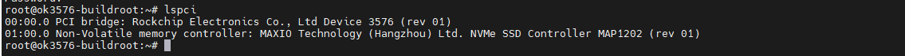
由于pcie设备类型较多，有可能默认不被内核支持需自行添加编译设备对应的驱动程序。
以pcie硬盘为例，ls /dev 可以看到如下nvme节点：
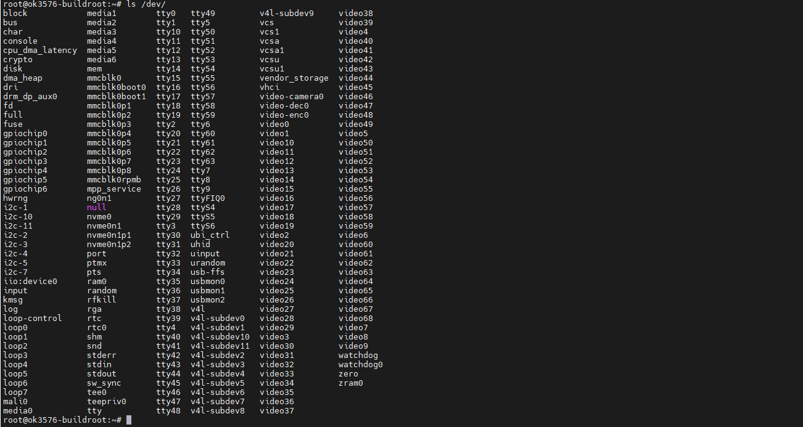
使用dd测试硬盘速率
写入：
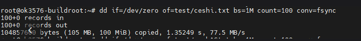
读取
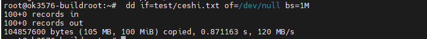
3.2.23 RKNPU测试
linux文件系统里提供了NPU的演示例程，可以运行测试：
root@ok3576-buildroot:/# ./rockchip-test/rockchip_test.sh
******************************************************
*** ***
*** ***************************** ***
*** * ROCKCHIPS TEST TOOLS * ***
*** * V2.4 updated on 20240403 * ***
*** ***************************** ***
*** ***
*****************************************************
*****************************************************
ddr test: 1 (ddr stress test)
cpu test: 2 (cpu stress test)
gpu test: 3 (gpu stress test)
npu test: 4 (npu stress test)
suspend_resume test: 5 (suspend resume)
reboot test: 6 (auto reboot test)
power lost test: 7 (power lost test)
flash stress test: 8 (flash stress test)
recovery test: 9 (recovery wipe all test)
audio test: 10 (audio test)
camera test: 11 (camera test)
video test: 12 (video test)
bluetooth test: 13 (bluetooth test)
wifi test: 14 (wifi test)
wifibt config test: 15 (wifibt config test)
chromium test: 16 (chromium with video test)
*****************************************************
please input test moudle:4 //输入4选择npu stress test
*****************************************************
*** ***
*** NPU TEST ***
*** ***
*****************************************************
***********************************************************
npu stress test: 1
npu scale frequency test: 2
rknn demo test: 3
***********************************************************
3 //输入3选择rknn demo test
RKSockServer 00:37:39-138 {initServer :058} proto:tcp, hostname:127.0.0.1, path:, port:3893
RKSockServer 00:37:39-138 {initNetServer :071} binding to host:127.0.0.1, port:3893
(null) 00:37:39-139 {rt_os_sys_set_max_:050} max open files cur: 65536 rlim_max: 65536 change to 65535
rk-debug -----------------------Graphics so version=4.25.23.2-----------------------------
rk-debug init version=4.25.23.2,args[16,16,0], threadId=1103
arm_release_ver of this libmali is 'g2p0-01eac0', rk_so_ver is '6'.
GL Version = OpenGL ES 3.2 v1.g2p0-01eac0.ec91dd91b6def45faaba124fc8d656d3
GL Vendor = ARM
GL Renderer = Mali-G52
rk-debug setupGraphicsRenderInRGB1555YUVTarget [6,1,0,0]
rk-debug setupGraphicsRenderInRGB888YUVTarget [9,1,0,-1]
rk-debug -----------------------Graphics so version=4.25.23.2-----------------------------
rk-debug init version=4.25.23.2,args[16,16,0], threadId=1117
GL Version = OpenGL ES 3.2 v1.g2p0-01eac0.ec91dd91b6def45faaba124fc8d656d3
GL Vendor = ARM
GL Renderer = Mali-G52
rk-debug setupGraphicsRenderInRGB1555YUVTarget [6,1,0,0]
rk-debug setupGraphicsRenderInRGB888YUVTarget [9,1,0,-1]
cmpi 00:37:39-541 {parserDisplayCfg :095} pstDisPlayCfg->bUseRGACompres = 1
cmpi 00:37:39-541 {parserDisplayCfg :096} pstDisPlayCfg->enCompressMode = 0
cmpi 00:37:39-541 {parserDisplayCfg :095} pstDisPlayCfg->bUseRGACompres = 1
…
3.2.24 SQLite3测试
SQLite3是一款轻型的数据库，是遵守ACID的关系型数据库管理系统，占用资源低。OK3576-C开发板移植的是3.21.0版本的sqlit3。
root@rk3576-buildroot:/# sqlite3
SQLite version 3.36.0 2021-06-18 18:36:39
Enter ".help" for usage hints.
Connected to a transient in-memory database.
Use ".open FILENAME" to reopen on a persistent database.
sqlite> create table tbl1 (one varchar(10), two smallint);//创建表tbl1
sqlite> insert into tbl1 values('hello!',10);//tbl1表内插入数据
hello!|10
sqlite> insert into tbl1 values('goodbye', 20);//tbl1表内插入数据goodbye|20
sqlite> select * from tbl1;//查询表tbl1中内容
hello!|10
goodbye|20
sqlite> delete from tbl1 where one = 'hello!';//删除数据
sqlite> select * from tbl1;//查询表tbl1中内容
goodbye|20
sqlite> .quit //退出数据库（或使用.exit命令）
root@rk3576-buildroot:/#
3.2.25 GPIO测试
OK3576平台底板原理图中引出扩展IO引脚，位于底板P17

以GPIO_P17 PIN为例进行测试
root@ok3576-buildroot:/# cat /sys/kernel/debug/gpio | grep i2c
gpiochip6: GPIOs 485-508, parent: i2c/2-0023, 2-0023, can sleep: //识别到io扩展芯片
root@ok3576-buildroot:/# fltest_extgpio.sh GPIO_P17 1 //GPIO_P17 拉高
root@ok3576-buildroot:/# fltest_extgpio.sh GPIO_P17 0 //GPIO_P17 拉低
注意：fltest_extgpio.sh只能测试IO扩展芯片引脚， OK3576 soc GPIO引脚请使用fltest_gpio.sh脚本进行测试。
04_OK3576平台多媒体测试
OK3576平台音视频部分应用层软件采用的是Gstreamer，支持硬件编解码。本节所有的示例均是基于Gstreamer命令行的形式。如果您需要带界面的播放器，您也可以使用qt的多媒体类，同样支持硬编解，可以参考Qt测试章节。
OK3576平台内部有一个视频处理单元VPU，支持以下格式的视频硬编解：
视频解码： H.264, H.265, VP9,AV1,AVS2。
视频编码： H264、H.265。
OK3576平台硬件编解码参数表：
Video Decoder |
Format |
Profile |
Resolution & Frame rate |
|---|---|---|---|
H.265 |
main 10 |
8K@30fps or 4K@120fps |
|
H.264 |
main 10 |
4K@60fps |
|
VP9 |
Profile 0/2 |
8K@30fps or 4K@120fps |
|
AV1 |
Profile 0/2 |
8K@30fps or 4K@120fps |
|
AVS2 |
main 10 |
8K@30fps or 4K@120fps |
|
Video Encoder |
H.264 |
multi-stream |
4K@60fps |
H.265 |
multi-stream |
4K@60fps |
4.1 音频和视频播放体验
4.1.1使用gst-play播放器播放视频和音频
Gplay 是基于 Gstreamer 实现的音视频播放器，能够自动根据硬件自动选择合适的插件进行音视频播放，运行也十分简单。
root@ok3576-buildroot:/#<font style="color:#0000FF;"> gst-play-1.0 /userdata/1080p_30fps_h265-30S.mp4</font>
//播放带声音视频文件，由耳机放音测试
Press 'k' to see a list of keyboard shortcuts.
Now playing /userdata/1080p_30fps_h265-30S.mp4
Redistribute latency...
======> lhj add func:mpp_dec_init line:608 ok mpp_dec_debug:0
[ 112.236844] dwhdmi-rockchip 27da0000.hdmi: Rate 149430000 missing; compute N dynamically
Redistribute latency...
[ 112.282339] dwhdmi-rockchip 27da0000.hdmi: Rate 149430000 missing; compute N dynamically
Redistribute latency...
Redistribute latency...
Redistribute latency...
0:00:30.0 / 0:00:30.0
Reached end of play list.
4.1.2使用gst-launch 播放视频
root@ok3576-buildroot:/#<font style="color:#0000FF;"> gst-launch-1.0 filesrc location=/userdata/1080p_60fps_h265-30S.mp4 ! qtdemux ! queue ! h265parse ! mppvideodec ! waylandsink</font>
//仅播放视频
Setting pipeline to PAUSED ...
Pipeline is PREROLLING ...
Redistribute latency...
======> lhj add func:mpp_dec_init line:608 ok mpp_dec_debug:0
Redistribute latency...
Pipeline is PREROLLED ...
Prerolled, waiting for async message to finish...
Setting pipeline to PLAYING ...
Redistribute latency...
New clock: GstSystemClock
Got EOS from element "pipeline0".
Execution ended after 0:00:30.000513681
Setting pipeline to NULL ...
Freeing pipeline ...
4.1.3使用gst-launch 播放音频
root@ok3576-buildroot:/#<font style="color:#0000FF;"> gst-launch-1.0 filesrc location=/userdata/piano2-CoolEdit.mp3 ! id3demux ! mpegaudioparse ! mpg123audiodec ! alsasink device=plughw:1,0</font>
//仅播放音频
Setting pipeline to PAUSED ...
Pipeline is PREROLLING ...
Redistribute latency...
Pipeline is PREROLLED ...
Prerolled, waiting for async message to finish...
Setting pipeline to PLAYING ...
Redistribute latency...
New clock: GstAudioSinkClock
Got EOS from element "pipeline0".
Execution ended after 0:00:06.360500639
Setting pipeline to NULL ...
Freeing pipeline ...
4.1.4使用gst-launch 播放视频和音频
root@ok3576-buildroot:/#<font style="color:#0000FF;"> gst-launch-1.0 filesrc location=/userdata/1080p_60fps_h265-30S.mp4 ! qtdemux name=dec dec. ! queue ! h265parse ! mppvideodec ! waylandsink dec. ! queue ! decodebin ! alsasink device=plughw:1,0</font>
//播放带声音视频文件
Setting pipeline to PAUSED ...
Pipeline is PREROLLING ...
Redistribute latency...
======> lhj add func:mpp_dec_init line:608 ok mpp_dec_debug:0
Redistribute latency...
Redistribute latency...
Redistribute latency...
Pipeline is PREROLLED ...
Prerolled, waiting for async message to finish...
Setting pipeline to PLAYING ...
Redistribute latency...
New clock: GstAudioSinkClock
Got EOS from element "pipeline0".
Execution ended after 0:00:30.001881098
Setting pipeline to NULL ...
Freeing pipeline ...
4.2 视频硬编码
4.2.1视频硬编码H.264
root@ok3576-buildroot:/#<font style="color:#0000FF;"> gst-launch-1.0 videotestsrc num-buffers=600 ! video/x-raw,framerate=30/1,width=3840,height=2160 ! mpph264enc ! h264parse ! mp4mux ! filesink location=test.mp4</font>
Setting pipeline to PAUSED ...
Pipeline is PREROLLING ...
Redistribute latency...
Pipeline is PREROLLED ...
Prerolled, waiting for async message to finish...
Setting pipeline to PLAYING ...
Redistribute latency...
New clock: GstSystemClock
Got EOS from element "pipeline0".
Execution ended after 0:00:31.765292066
Setting pipeline to NULL ...
Freeing pipeline ...
4.2.2视频硬编码H.265
root@ok3576-buildroot:/#<font style="color:#0000FF;"> gst-launch-1.0 videotestsrc num-buffers=600 ! video/x-raw,framerate=60/1,width=3840,height=2160 ! mpph265enc ! h265parse ! mp4mux ! filesink location=test.mp4</font>
Setting pipeline to PAUSED ...
Pipeline is PREROLLING ...
Redistribute latency...
Pipeline is PREROLLED ...
Prerolled, waiting for async message to finish...
Setting pipeline to PLAYING ...
Redistribute latency...
New clock: GstSystemClock
0:00:06.9 / 0:00:10.0 (69.5 %)
4.3 视频硬解码
4.3.1解码并播放H264格式视频
root@ok3576-buildroot:/# <font style="color:#0000FF;">gst-launch-1.0 filesrc location=/userdata/1080p_30fps_h264-30S.mp4 ! qtdemux ! queue ! h264parse ! mppvideodec ! waylandsink</font>
Setting pipeline to PAUSED ...
Pipeline is PREROLLING ...
Redistribute latency...
======> lhj add func:mpp_dec_init line:608 ok mpp_dec_debug:0
Redistribute latency...
Pipeline is PREROLLED ...
Prerolled, waiting for async message to finish...
Setting pipeline to PLAYING ...
Redistribute latency...
New clock: GstSystemClock
Got EOS from element "pipeline0".
Execution ended after 0:00:30.000555181
Setting pipeline to NULL ...
Freeing pipeline ...
4.3.2解码并播放H264格式视频带音频
root@ok3576-buildroot:/# <font style="color:#0000FF;">gst-launch-1.0 filesrc location=/userdata/1080p_30fps_h264-30S.mp4 ! qtdemux name=demux demux.video_0 ! queue ! h264parse ! mppvideodec ! waylandsink demux.audio_0 ! queue ! aacparse ! faad ! alsasink device=plughw:1,0</font>
Setting pipeline to PAUSED ...
Pipeline is PREROLLING ...
Redistribute latency...
======> lhj add func:mpp_dec_init line:608 ok mpp_dec_debug:0
Redistribute latency...
Redistribute latency...
Redistribute latency...
Pipeline is PREROLLED ...
Prerolled, waiting for async message to finish...
Setting pipeline to PLAYING ...
Redistribute latency...
New clock: GstAudioSinkClock
Got EOS from element "pipeline0".
Execution ended after 0:00:30.002234765
Setting pipeline to NULL ...
Freeing pipeline ...
4.3.3解码并播放H265格式视频
root@ok3576-buildroot:/# <font style="color:#0000FF;">gst-launch-1.0 filesrc location=/userdata/1080p_60fps_h265-30S.mp4 ! qtdemux ! h265parse ! mppvideodec ! waylandsink</font>
Setting pipeline to PAUSED ...
Pipeline is PREROLLING ...
Redistribute latency...
======> lhj add func:mpp_dec_init line:608 ok mpp_dec_debug:0
Redistribute latency...
Pipeline is PREROLLED ...
Prerolled, waiting for async message to finish...
Setting pipeline to PLAYING ...
Redistribute latency...
New clock: GstSystemClock
Got EOS from element "pipeline0".
Execution ended after 0:00:30.000445014
Setting pipeline to NULL ...
Freeing pipeline ...
4.3.4解码并播放H265格式视频带音频
root@ok3576-buildroot:/# <font style="color:#0000FF;"> gst-launch-1.0 filesrc location=/userdata/4k_60fps_h265-30S.mp4 ! qtdemux name=demux demux.video_0 ! queue ! h265parse ! mppvideodec ! waylandsink demux.audio_0 ! queue ! aacparse ! faad ! alsasink</font>
Pipeline is PREROLLING ...
[ 1705.438451] dwhdmi-rockchip fde80000.hdmi: Rate 266625000 missing; computeRedistribute latency. ..
NRedistribute latency...
dynamically
Pipeline is PREROLLED ...
Setting pipeline to PLAYING ...
Redistribute latency...
New clock: GstAudioSinkClock
0:00:01.4 / 0:00:30.0 (4.8 %)
4.3.5 解码并播放 VP9 格式视频
root@ok3576-buildroot:/# <font style="color:#0000FF;">gst-launch-1.0 filesrc location=/userdata/1080p_60fps_vp9-30S.mp4 ! qtdemux ! vp9parse ! mppvideodec ! waylandsink</font>
Setting pipeline to PAUSED ...
Pipeline is PREROLLING ...
Pipeline is PREROLLED ...
Prerolled, waiting for async message to finish...
Setting pipeline to PLAYING ...
Redistribute latency...
New clock: GstSystemClock
^Chandling interrupt. (10.3 %)
Interrupt: Stopping pipeline ...
Execution ended after 0:00:03.189342028
4.3.6 解码并播放 VP9 格式视频带音频
root@ok3576-buildroot:/# <font style="color:#0000FF;">gst-launch-1.0 filesrc location=/userdata/1080p_60fps_vp9-30S.mp4 ! qtdemux name=demux demux.video_0 ! queue ! vp9parse ! mppvideodec ! waylandsink demux.audio_0 ! queue ! aacparse ! faad ! alsasink device=plughw:2,0</font>
Setting pipeline to PAUSED ...
Pipeline is PREROLLING ...
[ 341.745740] dwhdmi-rockchip 27da0000.hdmi: Rate 149430000 missing; compute N dynamically
Redistribute latency...
Redistribute latency...
Pipeline is PREROLLED ...
Prerolled, waiting for async message to finish...
Setting pipeline to PLAYING ...
Redistribute latency...
New clock: GstAudioSinkClock
^Chandling interrupt. (1.3 %)
Interrupt: Stopping pipeline ...
Execution ended after 0:00:00.451334462
4.4 摄像头测试
OK3576支持OV13855 MIPI摄像头、UVC摄像头，首先来测试一下UVC摄像头，这里以罗技C270进程测试，将USB摄像头插入开发板，将自动安装uvc驱动。
4.4.1 UVC Camera测试
4.4.1.1摄像头识别检测和格式支持查询
摄像头识别检测
root@ok3576-buildroot:/# v4l2-ctl –list-devices //查看UVC camera设备结点，可见/dev/video20&21为USB摄像头结点
UVC Camera (046d:0825) (usb-xhci-hcd.0.auto-1.1):
/dev/video20
/dev/video21
/dev/media2
格式支持查询
root@ok3576-buildroot:/# v4l2-ctl –list-formats-ext -d /dev/video20 //查看摄像头支持的格式
ioctl: VIDIOC_ENUM_FMT
Type: Video Capture
[0]: 'YUYV' (YUYV 4:2:2)
Size: Discrete 640x480
Interval: Discrete 0.033s (30.000 fps)
Interval: Discrete 0.040s (25.000 fps)
Interval: Discrete 0.050s (20.000 fps)
Interval: Discrete 0.067s (15.000 fps)
Interval: Discrete 0.100s (10.000 fps)
Interval: Discrete 0.200s (5.000 fps)
Size: Discrete 160x120
Interval: Discrete 0.033s (30.000 fps)
Interval: Discrete 0.040s (25.000 fps)
Interval: Discrete 0.050s (20.000 fps)
Interval: Discrete 0.067s (15.000 fps)
Interval: Discrete 0.100s (10.000 fps)
Interval: Discrete 0.200s (5.000 fps)
Size: Discrete 176x144
Interval: Discrete 0.033s (30.000 fps)
Interval: Discrete 0.040s (25.000 fps)
Interval: Discrete 0.050s (20.000 fps)
Interval: Discrete 0.067s (15.000 fps)
Interval: Discrete 0.100s (10.000 fps)
Interval: Discrete 0.200s (5.000 fps)
Size: Discrete 320x176
Interval: Discrete 0.033s (30.000 fps)
Interval: Discrete 0.040s (25.000 fps)
Interval: Discrete 0.050s (20.000 fps)
Interval: Discrete 0.067s (15.000 fps)
Interval: Discrete 0.100s (10.000 fps)
Interval: Discrete 0.200s (5.000 fps)
4.4.1.2摄像头采集格式查询和修改
摄像头采集格式查询
root@ok3576-buildroot:/# v4l2-ctl -V -d /dev/video20
Format Video Capture:
Width/Height : 640/480
Pixel Format : 'YUYV' (YUYV 4:2:2)
Field : None
Bytes per Line : 1280
Size Image : 614400
Colorspace : sRGB
Transfer Function : Rec. 709
YCbCr/HSV Encoding: ITU-R 601
Quantization : Default (maps to Limited Range)
Flags :
4.4.1.3摄像头图像预览和拍照
摄像头图像预览
root@ok3576-buildroot:/# <font style="color:#0000FF;">gst-launch-1.0 v4l2src device=/dev/video20 ! videoconvert ! video/x-raw,format=NV12,width=640,height=480 ! waylandsink</font>
Setting pipeline to PAUSED ...
Pipeline is live and does not need PREROLL ...
Pipeline is PREROLLED ...
Setting pipeline to PLAYING ...
New clock: GstSystemClock
Redistribute latency...
0:00:04.8 / 99:99:99.
摄像头拍照
root@ok3576-buildroot:/# <font style="color:#0000FF;">gst-launch-1.0 v4l2src device=/dev/video20 num-buffers=1 ! videoconvert ! video/x-raw,format=NV12,width=640,height=480 ! jpegenc ! filesink location=pic.jpg</font>
Setting pipeline to PAUSED ...
Pipeline is live and does not need PREROLL ...
Pipeline is PREROLLED ...
Setting pipeline to PLAYING ...
New clock: GstSystemClock
Redistribute latency...
Got EOS from element "pipeline0".
Execution ended after 0:00:00.941724595
Setting pipeline to NULL ...
Freeing pipeline ...
//执行完成后查看根目录下生成的pic.jpg文件即可
4.4.2 OV13855测试
**4.4.2.1 摄像头识别检测和格式支持查询 **
root@ok3576-buildroot:/# v4l2-ctl –list-devices
rkcif (platform:rkcif-mipi-lvds):
/dev/video0
/dev/video1
/dev/video2
/dev/video3
/dev/video4
/dev/video5
/dev/video6
/dev/video7
/dev/video8
/dev/video9
/dev/video10
/dev/media0
rkisp_mainpath (platform:rkisp-vir0): //cam1
/dev/video55
/dev/video56
/dev/video57
/dev/video58
/dev/video59
/dev/video60
/dev/video63
/dev/media5
4.4.2.2 摄像头预览
root@ok3576-buildroot:/# <font style="color:#0000FF;">gst-launch-1.0 v4l2src device=/dev/video55 ! video/x-raw, format=NV12, width=1920, height=1080, framerate=30/1 ! waylandsink</font>
Setting pipeline to PAUSED ...
Using mplane plugin for capture
Pipeline is live and does not need PREROLL ...
Pipeline is PREROLLED ...
Setting pipeline to PLAYING ...
New clock: GstSystemClock
[ 314.354521] rkisp_hw 27c00000.isp: set isp clk = 702000000Hz
[ 314.361618] rkisp rkisp-vir0: first params buf queue
[ 314.362034] rkcif-mipi-lvds: stream[0] start streaming
[ 314.362194] rockchip-mipi-csi2 mipi0-csi2: stream on, src_sd: 000000003df896bb, sd_name:rockchip-csi2-dphy0
[ 314.362209] rockchip-mipi-csi2 mipi0-csi2: stream ON
[ 314.362247] rockchip-csi2-dphy0: dphy0, data_rate_mbps 1080
[ 314.362523] rockchip-csi2-dphy csi2-dcphy0: csi2_dphy_s_stream stream on:1, dphy0, ret 0
[ 314.362537] ov13855 3-0036: ov13855_s_stream: on: 1, 4224x3136@30
Redistribute latency...
0:00:02.0 / 99:99:99.
4.4.2.3 摄像头拍照
root@ok3576-buildroot:/# <font style="color:#0000FF;">gst-launch-1.0 v4l2src device=/dev/video5 num-buffers=1 ! video/x-raw,format=NV12,width=640,height=480 ! mppjpegenc ! filesink location=pic.jpg</font>
//摄像头拍照（前置）
Setting pipeline to PAUSED ...
Using mplane plugin for capture
Pipeline is live and does not need PREROLL ...
Pipeline is PREROLLED ...
Setting pipeline to PLAYING ...
New clock: GstSystemClock
[ 434.443953] rkisp_hw 27c00000.isp: set isp clk = 702000000Hz
[ 434.451747] rkisp rkisp-vir0: first params buf queue
[ 434.452082] rkcif-mipi-lvds: stream[0] start streaming
[ 434.452177] rockchip-mipi-csi2 mipi0-csi2: stream on, src_sd: 000000003df896bb, sd_name:rockchip-csi2-dphy0
[ 434.452187] rockchip-mipi-csi2 mipi0-csi2: stream ON
[ 434.452217] rockchip-csi2-dphy0: dphy0, data_rate_mbps 1080
[ 434.452685] rockchip-csi2-dphy csi2-dcphy0: csi2_dphy_s_stream stream on:1, dphy0, ret 0
[ 434.452695] ov13855 3-0036: ov13855_s_stream: on: 1, 4224x3136@30
[ 434.587464] rkisp-vir0: MIPI drop frame
Redistribute latency...
Got EOS from element "pipeline0".
Execution ended after 0:00:00.149978098
Setting pipeline to NULL ...
[ 434.668086] rkisp-vir0: MIPI drop frame
[ 434.668485] rkcif-mipi-lvds: stream[0] start stopping, total mode 0x2, cur 0x2
[ 434.708426] rockchip-mipi-csi2 mipi0-csi2: stream off, src_sd: 000000003df896bb, sd_name:rockchip-csi2-dphy0
[ 434.708454] rockchip-mipi-csi2 mipi0-csi2: stream OFF
[ 434.709488] rockchip-csi2-dphy csi2-dcphy0: csi2_dphy_s_stream_stop stream stop, dphy0
[ 434.709501] rockchip-csi2-dphy csi2-dcphy0: csi2_dphy_s_stream stream on:0, dphy0, ret 0
[ 434.709528] ov13855 3-0036: ov13855_s_stream: on: 0, 4224x3136@30
[ 434.709842] rkcif-mipi-lvds: stream[0] stopping finished, dma_en 0x0
root@ok3576-buildroot:/# ls
//查看是否生成 pic.jpg，可拷贝到 pc 查看
bin data etc lib linuxrc media oem pic.jpg rockchip-test run sdcard system udisk usr vendor
busybox.fragment dev info lib64 lost+found mnt opt proc root sbin sys tmp userdata var
4.2.3 OV5645 测试
摄像头对应节点
CAM2 ：rkcif-mipi-lvds1
CAM3 ：rkcif-mipi-lvds2
CAM4 ：rkcif-mipi-lvds4
CAM5 ：rkcif-mipi-lvds3
以测试 CAM5 为例
4.2.3.1、摄像头识别检测
root@rk3576-buildroot:/# v4l2-ctl –list-devices
rkcif (platform:rkcif-mipi-lvds4):
/dev/video44
/dev/video45
/dev/video46
/dev/video47
/dev/video48
/dev/video49
/dev/video50
/dev/video51
/dev/video52
/dev/video53
/dev/video54
/dev/media4
4.2.3.2、查看支持格式
root@ok3576-buildroot:/# v4l2-ctl –list-formats-ext -d /dev/video44
ioctl: VIDIOC_ENUM_FMT
Type: Video Capture Multiplanar
[0]: 'NV16' (Y/UV 4:2:2)
Size: Stepwise 64x64 - 1920x1080 with step 8/8
[1]: 'NV61' (Y/VU 4:2:2)
Size: Stepwise 64x64 - 1920x1080 with step 8/8
[2]: 'NV12' (Y/UV 4:2:0)
Size: Stepwise 64x64 - 1920x1080 with step 8/8
[3]: 'NV21' (Y/VU 4:2:0)
Size: Stepwise 64x64 - 1920x1080 with step 8/8
[4]: 'YUYV' (YUYV 4:2:2)
Size: Stepwise 64x64 - 1920x1080 with step 8/8
[5]: 'YVYU' (YVYU 4:2:2)
Size: Stepwise 64x64 - 1920x1080 with step 8/8
[6]: 'UYVY' (UYVY 4:2:2)
Size: Stepwise 64x64 - 1920x1080 with step 8/8
[7]: 'VYUY' (VYUY 4:2:2)
Size: Stepwise 64x64 - 1920x1080 with step 8/8
4.2.3.3、摄像头预览
root@ok3576-buildroot:/# gst-launch-1.0 v4l2src device=/dev/video11 ! video/x-raw, format=NV12, width=1920,height=1080, framerate=30/1 ! waylandsink
Setting pipeline to PAUSED …
Using mplane plugin for capture
Pipeline is live and does not need PREROLL …
Pipeline is PREROLLED …
Setting pipeline to PLAYING …
New clock: GstSystemClock
Redistribute latency…
0:00:06.3 / 99:99:99.
05_烧写系统
OK3576-C开发板目前支持OTG烧写方式。在用户资料中提供了相应的烧写工具。
5.1 OTG烧写系统
5.1.1 OTG驱动安装
路径：OK3576-C（Linux）用户资料\Linux\工具DriverAssitant_v5.11.zip
将上述路径文件解压到任意目录，以管理员权限运行
打开DriverInstall.exe 程序。
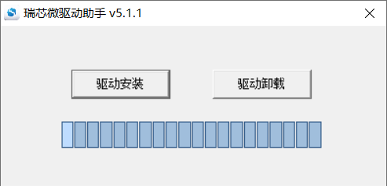
点击“驱动安装”。
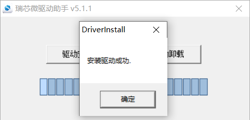
5.1.2 OTG完全烧写测试
5.1.2.1 RKDevTool烧写测试
路径：OK3576-C（Linux）用户资料\Linux\工具 RKDevTool_Release_v3.31.zip
这是瑞芯微提供的一款开发工具，使用前将其解压到全英文路径下，用Type-C线连接开发板TYPE-C0口和主机，按住开发板的recovery键不要松开，然后按一下reset键系统复位，大约两秒后松开recovery键。瑞芯微开发工具上将提示发现loader设备。
注意：识别设备的操作是开发板上电时recover按键是按下的状态。
注意：理论上瑞芯微开发工具解压目录随意，但有用户反馈瑞芯微开发工具解压目录需为全英文，若打开开发工具后与下图不一致，请考虑解压其在全英文目录下。
打开瑞芯微开发工具：
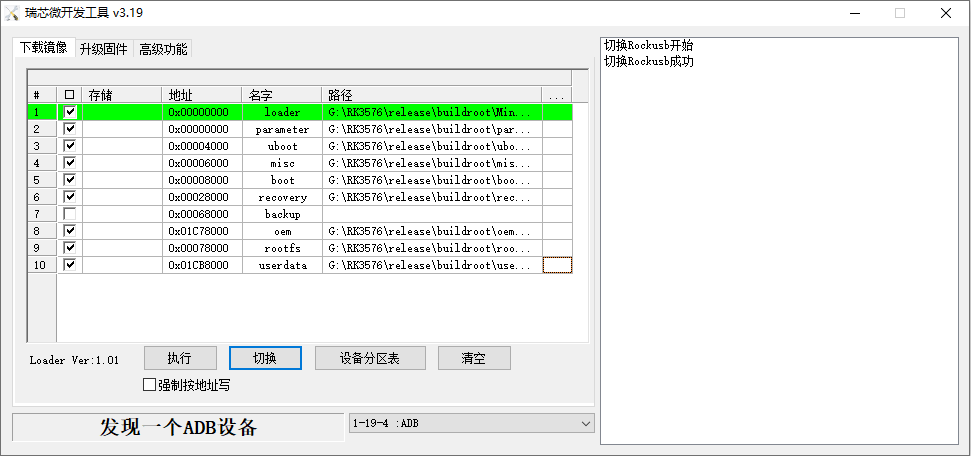
点击“切换“等待一会进入LOADER设备。根据自己镜像的位置调整镜像路径，然后勾选要更新的镜像，然后点击“执行”按钮进行升级。
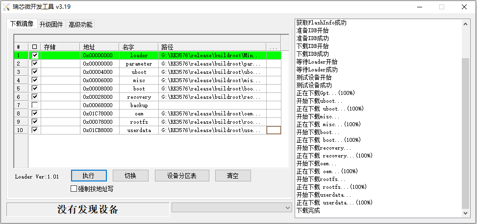
5.2 TF 卡烧写系统
烧写 TF 卡制作与烧写测试
注意：测试 TF 卡容量最大为 32G，使用 32G 以上 TF 卡可能会烧写失败。
将用户资料工具目录的 SDDiskTool_v1.76.zip拷贝到 windows 任意目录。以管理员权限运行
SD_Firmware_Tool.exe。
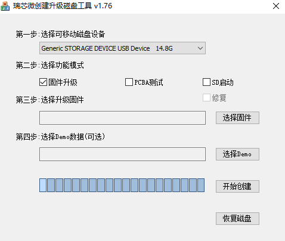
选择磁盘设备，勾选“固件升级”，并选择 update.img。点击开始创建。
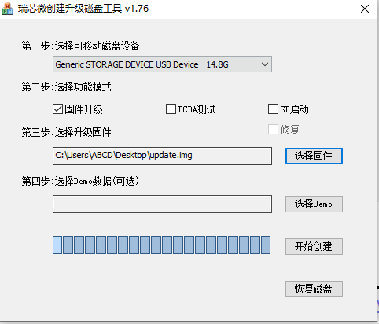
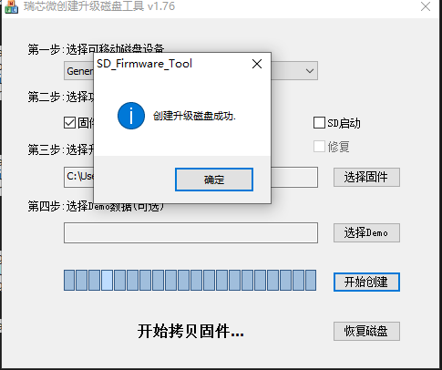
将 TF 卡插入开发板并启动，系统将自动进入烧写流程。烧写完成后屏幕和串口都将提示：
Please remove SD CARD!!!, wait for reboot.
此时，拔出 TF 卡，系统自动重新启动(请勿直接断电)。
批量生产时，可以根据核心板的心跳灯来判断烧写是否完成，烧写过程中的心跳灯变化如下：
1、内核启动阶段：心跳灯模式，规律的间歇性闪烁。
2、烧写准备阶段：EMMC 指示灯，熄灭。
3、烧写进行阶段：EMMC 指示灯，常亮。
4、烧写完成阶段：心跳灯模式，规律的间歇性闪烁。
烧写状态串口信息：

若移除 TF 未自动重启，手动重启也可完成烧写。烧写过程中请耐心等待。